Wrath
Wrath — A Codex
Working text, v1 — Prologue, Chapters I–VII, with back matter.
Private. Not for circulation.
Layout set in Garamond.
Plate captions in Garamond italic.
Chapter headings in blackletter and small caps.
Scripture rubricated.
— colophon —
Contents
- Prologue1
- IThe Ninefold Order19
- IIThe Powers31
- IIIThe Guardians47
- IVThe Fallen61
- VThe Enemy Below75
- VILanguage and Liturgy87
- VIIThe Hour at Street Level99
- Author's Note109
- Plates and Sources115
but against principalities, against powers,
against the rulers of the darkness of this world,
against spiritual wickedness in high places.
Hell is in the air.
Heaven is past it.
This is not a rescue. It would be a kinder book if it were. What follows is a field manual for a world that did not see the door it was about to open, and has been trying to close it ever since — unsuccessfully, unevenly, in some places not at all. The door is open. The thing on the other side of it is not metaphor. The beings who answer it are not metaphor either. Neither side was invented for this story. Both were waiting for us in our own books.
Civil authority has collapsed in most of the countries that had any. Martial law is the operational default where martial law can be declared. Where it cannot, the Emergency Alert System still pushes its single instruction through such infrastructure as remains: shelter in place; if you cannot, withdraw to the nearest church. The nearest church is frequently the nearest target. This is the working condition.
The situation is not new in kind, only in visibility. Scripture warned of it in a register modern ears had learned to treat as ornament. Ephesians named the enemy correctly. Daniel described the delay. The Apocalypse catalogued the instrument. It is only that the things the tradition spoke of plainly have now resolved into actual bodies in actual streets — which was always going to be harder to look at than it was to hear preached.
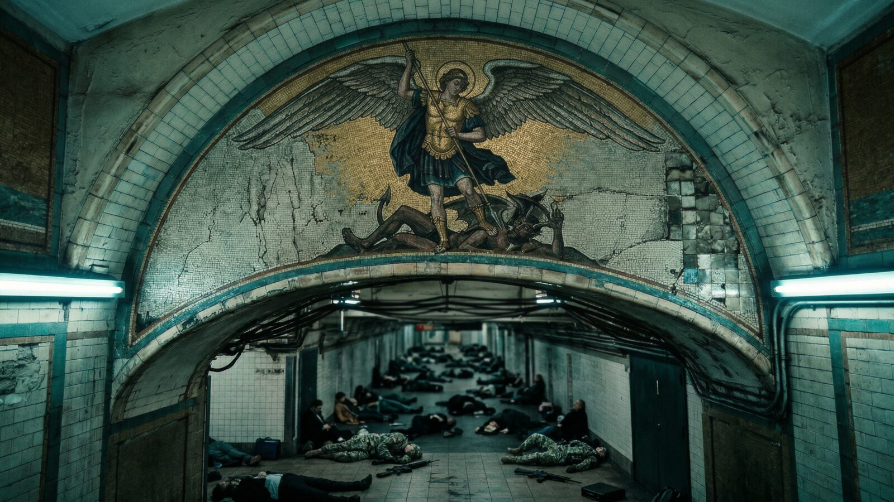
The mural above is not chosen for irony. It is chosen because the tradition that put it up understood what was under our feet long before the ground opened. The archangel depicted there has not arrived in person, and by the rules of this book he will not. What answers from his quarter will answer without showing its face; absence, in this register, is a form of reverence, and the reader should learn to read absence the way the old painters taught us to read light.
The Shape of the Air
The universe has a vertical architecture, and the vertical architecture has a traffic problem. Heaven sits at the far end of it. Hell is much closer — close enough to reach the surface with effort it has already proven willing to spend. Between the two is contested air: the corridor prayers travel up through and answers travel down through, interrupted by enemy action the whole way. Prayers go up fast. Answers come down slow.
This is not a new idea. Daniel, in the tenth chapter of his book, records being told by a messenger that his prayer was heard on the first day it was made and that the messenger required twenty-one days to deliver the answer, having been held in transit by a hostile prince. Saint Paul, to the Ephesians, names the same enemies in the same region of the same world: the powers, the principalities, the rulers of the darkness of this world, the spiritual wickedness in high places. He did not say high places as geography. He said high places as altitude. The reader is asked to take him literally.
Non est nobis colluctatio adversus carnem et sanguinem, sed adversus principes, et potestates, adversus mundi rectores tenebrarum harum, contra spiritualia nequitiae in caelestibus. Eph. 6:12, Vulgate
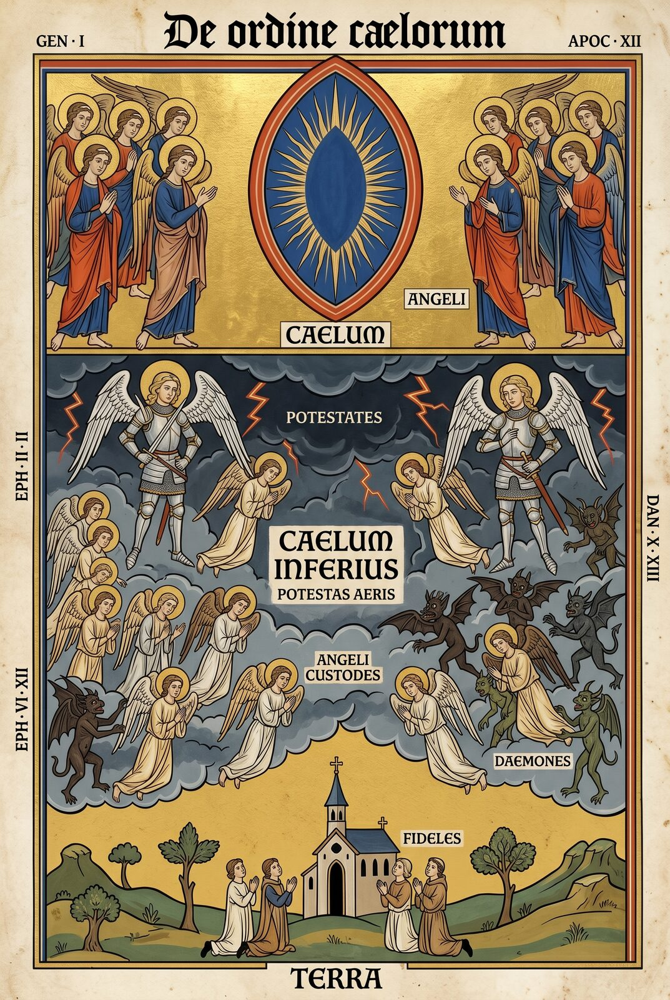
The plate above is the book's cosmological schema stated in the form the tradition used when it needed to state one. The three registers are not metaphorical layers; they are operational zones, and the middle zone is where the volume of this book's action occurs. Readers unfamiliar with the Pauline phrase potestas aeris — the power of the air, from the second chapter of Ephesians — are asked to notice that the Vulgate's word for the Adversary's house is the same Vulgate's word for the warrior choir that opposes him at the same altitude. The coincidence is not a coincidence. Chapter VI will return to it by name.
The practical consequence, for a reader holding this book, is simple. When help is late it is not because help declined to come. It is because help is dying in the air between its dispatch and its arrival, and the world is being asked to understand, without being told, what has always been implicit in the act of prayer: that what we call up is a thing that then has to travel.
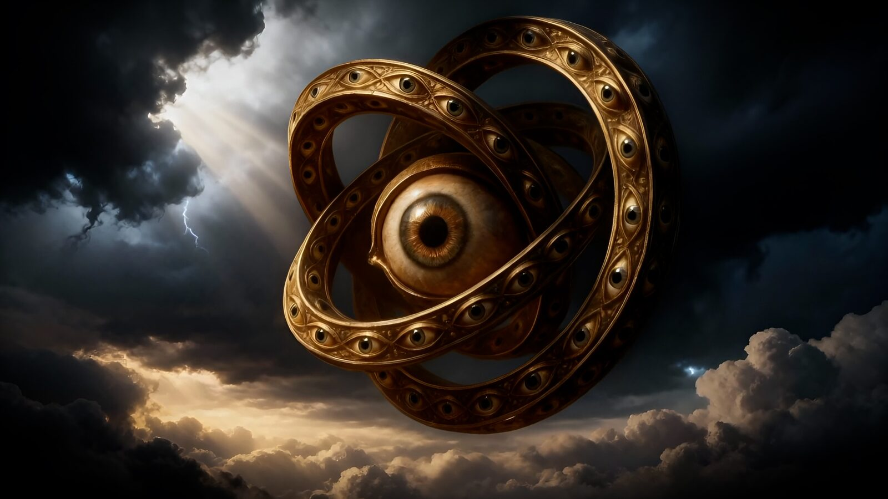
The higher choirs of the angelic order are present in this war. They do not appear often, and the book does not try to convince the reader otherwise. When they do appear, they appear in figure — not in abstraction, not in light-effect, not in metaphor. The tradition painted them the way it painted them because the painters saw them correctly. Readers will meet Seraphim at weight and Thrones at distance in later chapters; for now the one above the street is enough to say what this book is arguing. The sky is inhabited.
What Has Come Across
The enemy did not invade. It exfiltrated — something had always been here, dormant, bound, and the bindings thinned until they gave. Who thinned them is a question the book is not in a hurry to answer and will answer sidelong when it answers at all. Suffice that the wards the old Church kept up for centuries were not decorative, and that what they were keeping down did not dissolve when the wards did. It woke up.
It did not wake alone. The rebel hierarchy that the tradition has always described — the angels who fell with Lucifer, a third of the host by Revelation's accounting, cast out in Isaiah's famous fourteenth chapter, held in chains of darkness by the authors of Second Peter and Jude until the judgment of the great day — did not require an invitation. When the restraint cracked, they came through it as through an open door. The door is still open. They are still coming through.
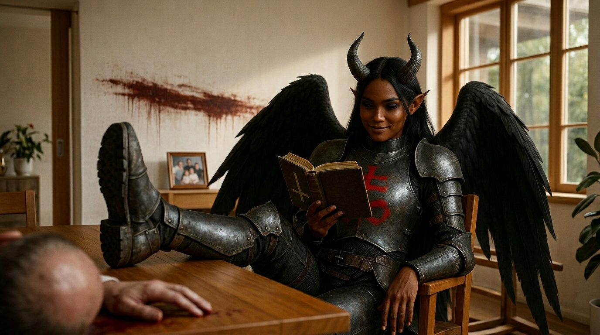
The named ones — the fallen commanders who retain warrior rank and warrior knowledge — move among their troops in both registers. They are what a Power of Heaven could become if the inside of her broke, and they know the order they used to belong to intimately enough to counter it. The woman at the table is the first of these the book will put a name to. She is not rage. Rage is easier to film than what she actually is. The house belonged to a family. She murdered them without urgency, without ritual, without appetite; she put her feet up because the afternoon was long; she turned the Bible upside down because she was bored of the right way up. The book will dwell on her in her own chapter. For now the reader is asked only to register that the woman who looks this comfortable among the dead is the enemy at the tier that commands the cult, and that what she communicates by doing nothing in particular is harder to look at than what lesser demons communicate by feeding.
Beneath her is the cult — hooded, anonymous, interchangeable, self-marking with a symbol older than Christianity's reading of it, which the book will name correctly in its own place. Beneath the cult is the pack: lesser demons the tradition called by a specific word when it cast them out, a word the book will restore.
Arrival is Late
The first obligation of this book is to be honest about a thing the genre has habitually lied about. When Heaven answers, it answers through specific beings who have to travel specific distances through specific air, and most of them do not make it. The reader will be shown this plainly, because the shape of what arrives cannot be understood without the shape of what did not.
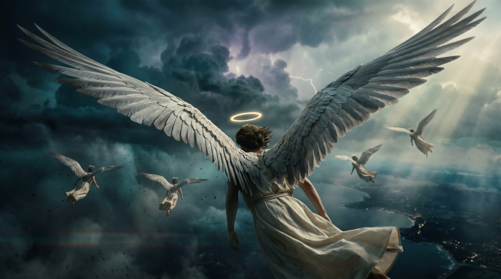
A Guardian angel is dispatched when a specific human prayer is heard. The Catholic tradition holds, in its catechism and in its quiet old practice of teaching a child a bedtime prayer addressed to one, that every soul has a Guardian; the book accepts that theologically and shows it materially. Eighty are sent to deliver an answer. Seventy-nine die on the way. The ones who die are not off-screen. They are part of the arrival. The one who gets through to the sleeping child, to the mother on her knees in a parish that no longer has a roof, to the soldier whose confession was yesterday and whose luck is tonight — that one arrives with her wing dragging and her halo dim and her light bleeding, and she composes herself before her charge is allowed to see her. The charge thinks a prayer was answered. A prayer was answered. The charge is not required to count the cost. The reader is.
Guardians are not warriors. The book will be clear about this, and the reader should not expect them to fight. Their function is older and quieter: concealment. The one who gets through hides her charge from demonic notice. Cultists walk past the room; lesser demons sweep the block; a fallen commander looks and sees nothing. The sleeping child was never in the frame. This is the mechanic by which the tradition's promise — he shall give his angels charge over thee — survives a world in which the angels are dying in numbers and the enemy is at the door. Protection here is not a sword between the charge and the enemy. It is the charge being made unfindable.
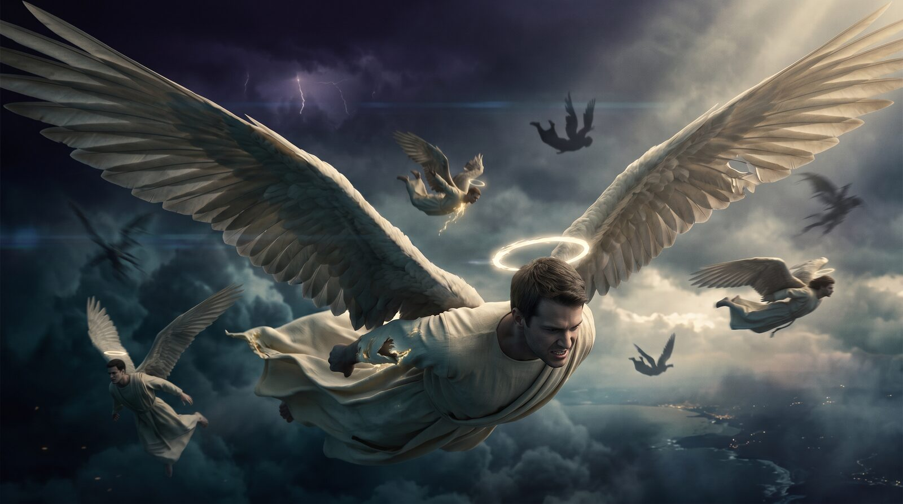
The reader will be asked to trust that when an answered prayer appears in these pages without its seventy-nine casualties on screen, the seventy-nine are still the reason the answer weighs what it weighs. The book's silence on them, in those moments, is not forgetfulness. It is the book trusting its reader to have already learned the rule.
The Powers
The protagonists of this universe are not the Guardians. The Guardians hide; the Guardians die; the Guardians weep where nobody is looking. The protagonists of this universe are the tier immediately above them in the Second Sphere of the Pseudo-Dionysian hierarchy, the warrior order the classical tradition painted with armor and swords and halos and white wings, and whom the book restores to the era of the arrival by the simple expedient of putting contemporary weapons in their hands and trusting the reader to recognize that the beings are the same.
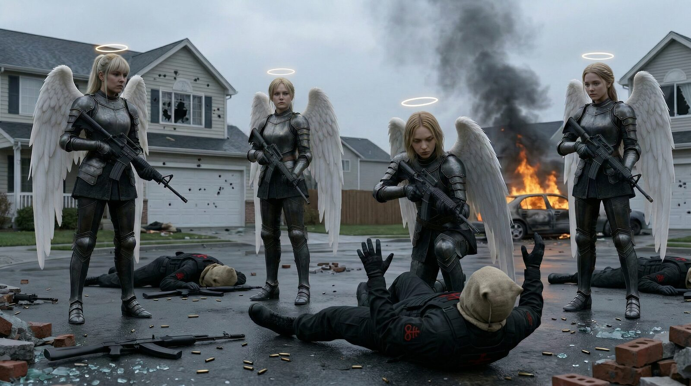
They are four. They will be introduced each in her own chapter in the proper way, through the altarpiece and the placard and the chamber in which her painting has always hung. For the reader sitting in the Prologue, it is enough to name them and state what they bring. Iustitia, who renders what the covenant says is due, who speaks her Latin and kills without heat. Zelus, whose wrath is correctly ordered fire rather than fury, and who will level a city when the city has become unsalvageable. Vindicta, who returns a specific wrong to its author in the measure it was inflicted, neither more nor less. Misericordia, who is alone on her side of the testament line, whose function is the extraction and cradling of the suffering, and whose loneliness in this roster is the only reason its severity reads as judgment rather than cruelty.
Three of them carry Old Testament weight. One carries New. Each is one aspect of the same divine will, and when two of them appear together the scene is not a contradiction; it is the drama of the attributes of God in visible tension.
They are uniformly blonde, uniformly blue-eyed, uniformly female, uniformly haloed, uniformly winged. This is the order's uniform. It is the uniform the tradition gave the tradition's painters to paint, and the tradition's painters were right. The book will not diversify the uniform because the order does not diversify the uniform. Variety in the universe lives at other tiers — among the Guardians, among the chaplains, among the lesser angels and the ordinary faithful and the dead and the enemy — but at this tier, the sameness is the rank.
How to Read This Book
The chapters that follow take each tier of the universe in turn and document what is known, what is seen, and what is believed. They do not explain everything. A book about beings whose altarpieces predate the arrival by four centuries should not explain everything; some of what is on the page is on the page because the tradition put it there, and the book is the tradition's heir, not its auditor.
Scripture is quoted where scripture is load-bearing. Latin is given where Latin carries the weight; translation follows where modern English earns its keep. The sidebar and the footnote are used lightly; the image is used heavily, because the image was how the tradition transmitted this material for most of its history, and the book considers itself part of that transmission. Where an image is present, the reader is invited to look at it the way one looks at an altarpiece rather than the way one looks at an illustration. The distinction matters.
What the book does not contain — direct depiction of the Trinity, of Christ, of the named Archangels, of canonized saints — is not absent by oversight. They are present by invocation, command, scripture, and effect, and their refusal to appear in figure is, in the book's understanding of its own material, the correct refusal. The old rule holds: the holy is shown by what it does, not by its face.
The dove above is here for a reason. This is a grimdark book. It is not a nihilist book. The register in which Iustitia kills and the register in which Iustitia permits a dove to rest on her hand are, within the tradition from which she is drawn, continuous. A reader who has been trained by a century of post-Christian fiction to expect the one without the other may be surprised by this book in both directions — by its willingness to depict judgment at full force, and by its equal willingness to depict the benediction that is judgment's companion in the tradition the book inherits. The book was written with that surprise in mind.
The rest is chapters. The reader should read them in order the first time, and out of order thereafter, as the tradition itself is read.
The Ninefold Order
The universe of this book has nine choirs. The structure is not proposed; it is inherited. Pseudo-Dionysius the Areopagite catalogued it in the sixth century, the Scholastics preserved it, the Baroque painted it, the Catholic tradition kept teaching it through a century in which most of Christendom stopped asking the question. The book restores the inventory whole because the inventory is whole, and because a universe that quietly drops half of the choirs is a universe that has quietly dropped the tradition's argument.
All nine orders exist. Not all nine appear on camera with the same frequency, and the book does not pretend otherwise. The rule governing appearance is simple and is stated once here so that the chapters to follow can work within it without restating it: rarity is the rank signal. The higher the choir, the rarer the appearance. When the higher choirs do appear, they appear figured — no abstraction, no light-effect, no metaphor. The tradition's painters saw them correctly and painted them accordingly, and the book takes its visual instruction from them rather than from the post-Christian habit of abstracting away from what the saints and prophets described.
There is one exception to the scaling rule, and it is the one the Prologue has already named: the Guardians are theologically the most numerous choir and are, on the ground, the rarest in visible arrival. This is not the scaling rule breaking; it is the scaling rule being interrupted by transit mortality, which the previous chapter has already placed on the record. The Guardians will have their own chapter.
The First Sphere
Seraphim · Cherubim · Thrones
The First Sphere is the closest to God and the furthest from us. Its three orders — Seraphim, Cherubim, and the Thrones that the Hebrew tradition also calls Ophanim — are, in the Pseudo-Dionysian scheme, the beings whose primary vocation is not governance or messaging but the direct contemplation of the divine. They exist at the register the book reserves for its rarest escalations. A short that features a First-Sphere choir is a short in which something has become theologically enormous.
Seraphim
Isaiah, in the sixth chapter of his prophecy, saw them first by Judaean reckoning: six wings each, two covering the face, two covering the feet, two for flight. The covering of the face is a gesture of reverence, not of concealment — a refusal to presume the privilege of direct vision even within the throne room they inhabit. They speak the trisagion. Sanctus, Sanctus, Sanctus, Dominus Deus Sabaoth: holy, holy, holy, Lord God of hosts.
Seraphim stabant super illud: sex alae uni, et sex alae alteri: duabus velabant faciem eius, et duabus velabant pedes eius, et duabus volabant. Is. 6:2, Vulgate
In this universe a Seraphim is what descends when Heaven is answering. The register is monumental — marble-angel composure, stillness in motion, gravity on the scale of cathedrals. Appearances are reserved for tonal escalation that cannot be carried by any lower tier. The reader should expect to see one not more than once or twice across a volume.
Cherubim
Ezekiel, exiled by the river Chebar, saw them in his opening vision: four living creatures with four faces each — a man, a lion, an ox, an eagle — wings, a terrible brightness, fire going up and down between them. Genesis places them at the eastern gate of Eden, stationed with the flaming sword that turned every way, to keep the way of the tree of life. They are the guardians of the holy and of the thresholds of the holy; their function in the tradition is watch rather than message, presence rather than speech. The reader will not meet a Cherubim in this volume. The visual register is pending and the book declines to commit to it prematurely; the tradition will be restored when the art for it has been earned.
Thrones (Ophanim)
Ezekiel saw these immediately beside the living creatures: wheels upon wheels, beryl-coloured, constructed as if a wheel were in the middle of a wheel, their rims high and dreadful and full of eyes round about. The Scholastic tradition names them the seats of God's justice borne in motion — the bearing tier, the order on which the weight of the throne actually rests. They have already appeared in this book's material. The plate that follows is one such appearance, and the mode of that appearance is load-bearing for everything that follows.
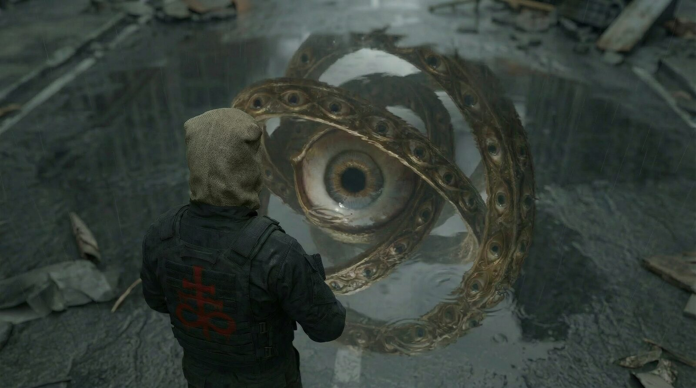
The reflection is not a stylistic choice. It is the plate's proposition. At the moment the cultist leans over the water, the Ophanim inhabits the reflected surface; it is not an image of the choir, it is the choir, located there. The tradition has always argued that the Thrones appear in modes that refuse to be domesticated — wheels within wheels, rims high and dreadful and full of eyes round about, a brightness Ezekiel described and declined to systematize. A puddle is one such mode. The subject of the shot is not the cultist. The subject is what is looking up at him.
The Second Sphere
Dominions · Virtues · Powers
The middle sphere is the sphere of governance. Saint Paul names these orders by class in the letter to the Colossians: thrones and dominions and principalities and powers. He names them again, slightly differently, to the Ephesians, and again to the Romans; he expects his readers to understand them as a list of things, not as a rhetorical pile. The book takes him at his word.
Dominions
Dominions, in the Scholastic reading, are the order through whom the ranks of the lower angelic orders are themselves governed. They set the orders of the work. They are not, in this universe, what arrives to a specific street on a specific night; they are what arranges the architecture through which that arrival is possible. The book figures them once, at the close of this section, and by a deliberately restrained rule: presence, not combat.
The rule is the one the tradition has always implied for the governance tier. A Dominion does not enter a contested city. His jurisdiction extends over it, and the extension is the intervention. His shadow falls across the district. The district is now under him in a register the Powers do not occupy. Whatever the cult is organizing at street level is organized beneath a shadow whose arrival on the battlefield is, by the tradition's own grammar, what governance means. The silhouette is crowned and winged because the classical painters painted him crowned and winged. The face is withheld because the face belongs to a chapter the book has not yet written.
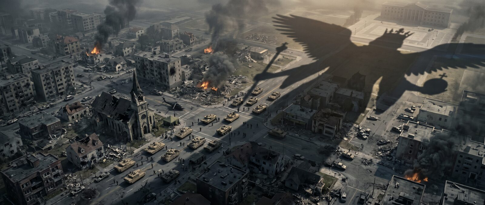
The Powers enter a room. A Dominion casts across one. That is the register difference the plate is asked to carry.
Virtues
Virtues are the order traditionally associated with the working of miracle, and with what the tradition calls cosmic maintenance — the operation of natural order, the motion of the stars, the continuing functioning of the created world at scales no narrative ever visits. The book names them and holds them in reserve for the short that earns one.
Powers
The Powers are the reason this book exists. They are the warrior order of the Second Sphere, the active tier whose function in the tradition is to oppose the hostile spiritual forces that the Third Sphere cannot oppose alone. They have their own chapter. They are the protagonists of the universe.
The argument the plate below is making is the book's core thesis compressed into one composition: the Powers are not inspired by the classical tradition's art. They are what the classical tradition's art depicted. The sword in Iustitia's hand in the painting is accurate to the era of the painting. The firearm in her hand in later chapters is accurate to the era of this book. The continuity is not cosmetic. The continuity is what the book is arguing.
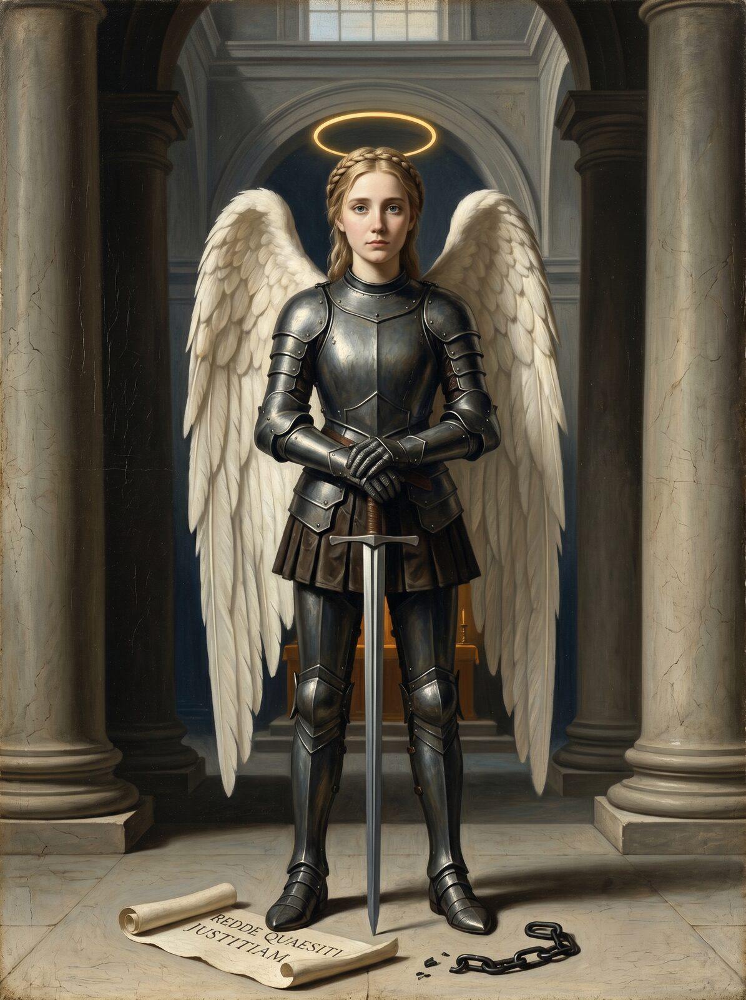
The Third Sphere
Principalities · Archangels · Angels
The lowest sphere is the sphere nearest to humanity, and consequently the sphere most often seen. Scripture speaks of its three orders with less reticence than it speaks of the higher tiers — unsurprisingly, because these are the orders most frequently present in the kinds of events scripture was written to record.
Principalities
The Principalities are the order set over peoples, over cities, over territories, over the political units in which human history actually happens. Daniel, in the tenth chapter of his book, names the prince of the kingdom of Persia as the angelic being who resisted the messenger bearing Daniel's answered prayer for twenty-one days — and names Michael, the prince of Israel, as the one who came to the messenger's help. A Principality, in that passage, is what a nation's spiritual commander is, and a rebellious Principality is what the enemy fields when the enemy rules a nation. The universe retains this. When this book speaks of a district having fallen, the reader is invited to understand that the fall is not only a matter of ground troops; the Principality over that district has already been won or lost or withdrawn, and the surface events are the posterior consequence.
Archangels
Michael, Gabriel, Raphael, Uriel. Scripture names the first three directly; the fourth comes to us through the tradition's supplementary material. They exist in this universe. They do not appear in this book. The rule has been stated already in the Prologue and will not be restated in the chapters. They are present by invocation, by command, by scripture, and by effect. Absence is not withholding. Absence is the tradition's own rule, and the book is content to be its custodian.
Common Angels (Guardians)
The ninth choir is the one the tradition calls, simply, Angels — the common Angels, the messengers at the register closest to humanity, the tier to which the Guardians belong. This is the choir the average reader has been taught about longest and heard about most often; the bedtime prayer a child is taught is addressed to one of them. The book accepts the tradition's teaching that every soul has a Guardian. The book also shows the gap between that teaching's arithmetic and what the ground actually sees; the next chapter after these cosmological ones will be the Guardians' own, and the transit-mortality mechanic will be treated in full there.
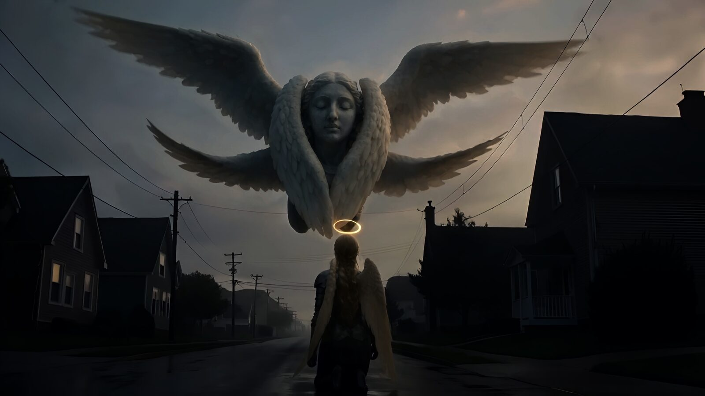
The plate above is offered here rather than in the First Sphere section because its argument is hierarchical rather than choir-specific. The Seraphim's descent into the immediate presence of a Power of the Second Sphere is what the tradition has always argued occurs when the higher tier has orders to convey to the tier immediately below it; the fact that the book is willing to film the transfer, rather than abstract it into a light-cue, is one of its load-bearing aesthetic commitments. What the old painters painted, this book will continue to paint. The continuity is not a style. The continuity is the argument.
What This Volume Does Not Yet Show
The reader who has read to this point is owed a plain account of what the book has not yet made visible. The Cherubim are not yet figured; their visual register is pending, and the book is unwilling to commit to a provisional design and then discard it. The Virtues and the Principalities are not figured; they belong to the chapters that are not yet written. The Archangels will not be figured in this volume or the next. The Trinity, and Christ, and the canonized saints, are outside the book's visual grammar by principle, and the principle will not be revised.
This restraint is not a concession to what has not been generated yet. It is a discipline. The ones the book does show are shown at full weight. The ones it does not show are present by invocation, by reference, by effect, and by the plain fact that the nine exist together and cannot be understood except as nine.
The Powers
How the reader will meet them
The book does not introduce its protagonists through a briefing. It introduces them through their altarpieces. Each of the four Powers named in this chapter is brought to the audience first as an oil painting in the Baroque manner, set in a chapel niche of the refuge compound, lit by beeswax candle at vigil, and then pushed into until the painting becomes the live figure. The icon and the operational Power are not two different images of the same being. They are the same image, rendered in two different centuries.
This is the thesis the book is built on. The painters of the Catholic tradition — Caravaggio, Reni, Gentileschi, Piero, the masters of the altarpiece — were not inventing a style when they painted the angelic. They were recording an appearance. The swords and spears they put in their angels' hands were the swords and spears of the era they were painting in, because that is what the tradition saw. The Powers on this page carry firearms because that is what they carry now. The continuity is not stylistic homage. The continuity is the argument. What the old painters painted, this book will continue to paint.
The altarpiece is rendered edge-to-edge as a reusable asset — in-universe, these paintings exist, hang, and predate the arrival by centuries. In the refuge compound that shelters the remnant faithful, four chambers have been established, one altarpiece each. The paintings have always been there. The vigil is new.
The placard is the paired diegetic object. A rectangular slab of weathered limestone, chiseled in the Trajan Imperial Roman tradition, deeply cut and darkened by four centuries of candle-smoke patina. Two lines, always. The first line carries the Power's Latin name, followed by her English gloss in small capitals — not a translation, a valence-corrector. The second line names what she is: a Power of Heaven. The placard is the world's voice. Blackletter is the book's voice — title cards, weapon engravings, cinematic punctuation. Roman serif is the diegetic voice — the stone that is actually in the room.
What a Power is
A Power of the Second Sphere, in the Pseudo-Dionysian scheme that governs this book, is a warrior-angel of the middle tier: above the messenger choirs, below the contemplative ones, positioned exactly where Heaven's engagement with earthly reality becomes figured and executed. Thomas, in the Summa, places the Virtutes in the order that "works miracles" — the tier whose vocation is action.
In this book, every named Power is blonde, blue-eyed, female, haloed, and armored in medieval plate, carrying both classical and modern arms. This is not a style choice that is being defended. It is a refusal of the modern casting reflex. Angels are an order. Orders look alike within rank. They can be wounded. They can be killed. They are finite beings acting under covenantal authority, and the book will not pretend otherwise. The altarpiece is not an apotheosis. It is a record.
First among the four. The leader of the choir. Her virtue-domain — ordering, rendering what is due — is leadership itself, which is why the book places her first and the tradition does as well. She is Old Testament in her register. Her arrival is the arrival of judgment, and the targets of her judgment are specific: heretics, compromised priests, willing cultists, the ones who brought the breach through. She does not punish a city. She sentences a name.
Her classical lineage is Guido Reni. The Reni Archangel Michael in Santa Maria della Concezione is the template — the calm figure of authority, sword held at the vertical, the moment before execution rendered without theatrics. The Reni face is the Iustitia face. The book inherits the template without apology.
In live-action she carries the consecrated arms of her role. The canon-name for the class is Arma Consecrata; the name of her weapon is inscribed on it in the book's blackletter register, and the line she speaks before she executes is the same one the First Crusade carried into the field: Deus vult. God wills it. The phrase is not a slogan in this book. It is a verdict, delivered aloud, by a Power who has been authorized to deliver it.
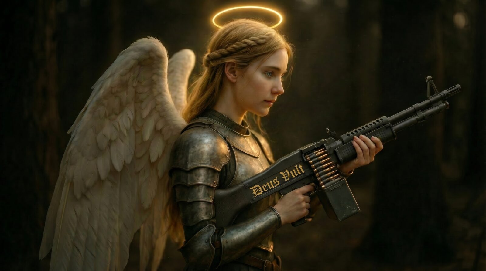
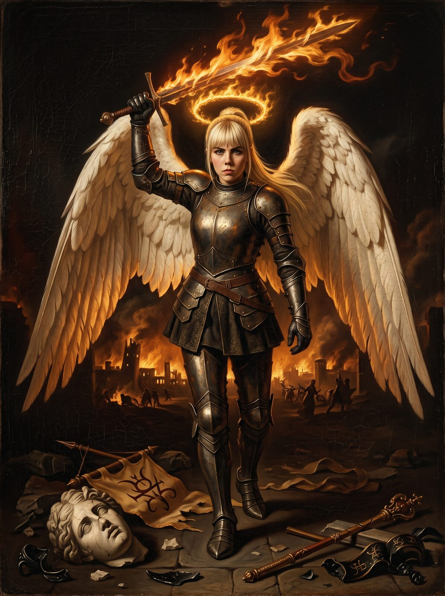
Old Testament. Active fire. The wrath-register the book opens on, and the Power the reader will associate with mass-scale answer to corruption: a city past redemption; a cult caught in the act; a specific demon whose killing requires everything. Her folk-register among humans is Fury, because Fury is what humans call what they see her do. Her real name, in the mouth of another angel, is Zelus.
Her classical grounding is Aquinas: ira per zelum. The holy form of wrath. The distinction the book must always hold is the distinction Aquinas holds — she is correctly-ordered fire, not reckless. Her first appearances must stage that distinction or she reads as fanatical, which is what the modern ear hears in the word Zeal, which is why the placard does the valence-correcting work it does. The adjective Holy is the entire argument.
Her weapon's Latin engraving is Consumet Eos — "It shall consume them." The line is from the canticle of Moses, Deuteronomy 32: a fire is kindled in mine anger, and shall burn unto the lowest hell. The tradition has always read that fire as the fire of holy zeal. The book restores the reading and puts the line on the weapon that carries it.
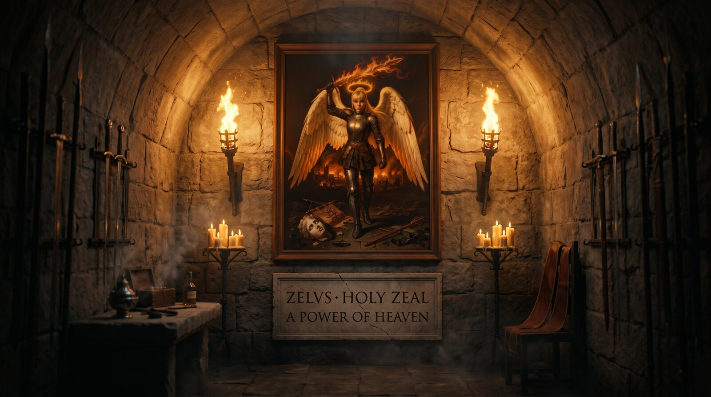
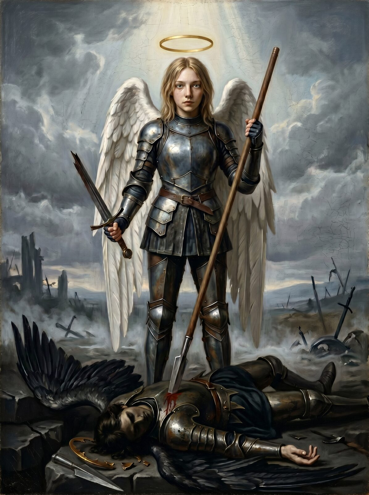
Old Testament. Lex talionis made manifest — as he has done, so shall be done unto him. She arrives to those who inflicted specific harm and delivers proportionate consequence, measured to the act itself. Her register is not rage. It is precise mirror-return. The distinction from Iustitia is narrow and load-bearing: Iustitia renders what the covenant legislates; Vindicta renders what the act itself demanded in return. One is legislative. The other is specific-to-act. Together they account for what the book calls judgment.
Her classical lineage is Artemisia Gentileschi. The Judith Slaying Holofernes composition is the template; the unflinching exactness is the template; the refusal to aestheticize what the task required is the template. The book inherits that refusal. Vindicta is not furious. Vindicta is accurate.
The Latin on her weapon is Mihi Vindicta — the Romans 12:19 line the tradition has always handled carefully. "Vengeance is mine; I will repay, saith the Lord." The verse is usually cited to forbid human revenge. The engraving is the other half of the same sentence: vengeance is the Lord's, and this is the instrument by which the Lord is delivering it.
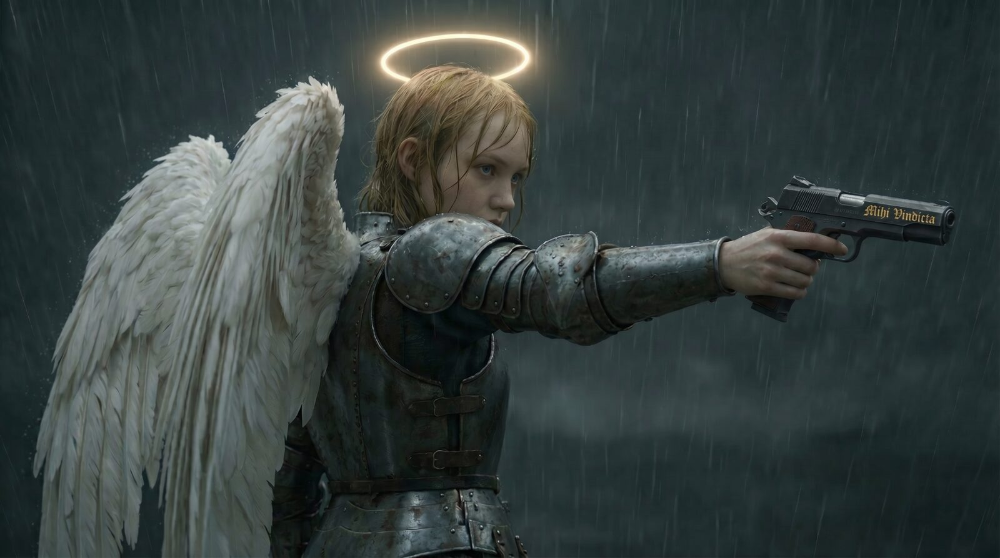
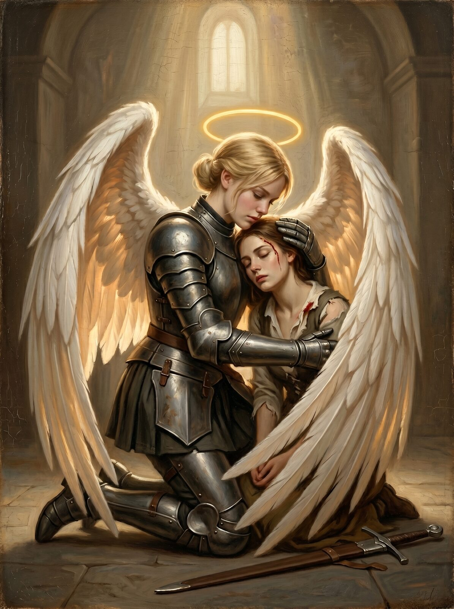
New Testament. The single thread of gentler grace in an otherwise uncompromising choir, and the reason the judgment of the other three registers as severity rather than cruelty. Her work is rescue. She extracts specific civilians from physical danger, shelters them under her wings as the Madonna della Misericordia shelters the faithful under her cloak, cradles the dying, intercedes for the suffering. The sword on the chapel floor is not retired; it is laid down for the action the painting is depicting.
The classical etymology matters here. Misericordia is miseri-cor — a heart with the suffering. It is not softness. It is presence in the place where the suffering are, and on their side of it.
The book opens on an outbreak. This is a structural fact about the era the codex is writing into, not a revision of Misericordia's nature. The other three Powers' icons and operations rhyme because judgment is the register the era demands. Misericordia's icon shows rescue. The streets in the opening days of the arrival are asking her for something harder — presence at the edge where rescue is no longer available, and, for the bodies past saving, the grant of rest.
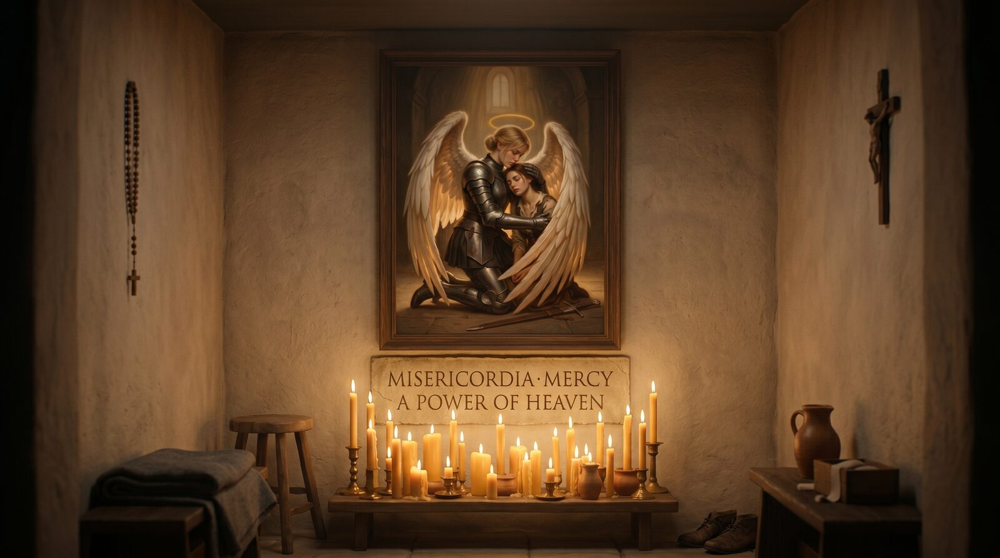
Her weapon is engraved Dona Requiem — "Grant rest." It is the line she speaks over a body she cannot extract. The verb is grant, not avenge. The register is requiem, not sentence. The weapon is consistent with the altarpiece even when the action it performs is at the outer edge of what mercy can do: she does not refuse presence to the body the other three Powers would leave where it fell. She speaks the Requiem line, and then she ends the suffering. This is still rescue. It is rescue at the only register left to it.
Arma Consecrata
The class of consecrated weaponry carried by the Powers has a canon name, and the book will use it. Arma Consecrata — "consecrated arms" — is the Latin term that matches actual Catholic sacramental language and reads naturally alongside the rest of the IP's Latin vocabulary. The Latin is what the object is. The English is what the soldier calls it.
Every consecrated weapon in the book carries a Latin inscription engraved in the IP's blackletter register: dark worn blued steel, gold Gothic blackletter. The inscription is the weapon's dedication. The inscription is also its name. Iustitia carries Deus Vult. Zelus carries Consumet Eos. Vindicta carries Mihi Vindicta. Misericordia carries Dona Requiem.
Consecrated arms are categorically more effective against demonic forces than uninscribed weapons of the same make. The book does not explain why. The sacred sword of the old altarpieces needed no origin story, and the sacred firearm of the contemporary arrival needs none either. Provenance is not the point. Effect is the point.
Icon and Operation
The altarpiece register and the operational register are the same figure. This is not a two-stage identity. It is a two-stage visibility. The figure in the painting and the figure in the firefight are one being, appearing in two centuries, continuing one lineage of work. The icon is not the memory of the Power. The icon is the Power, rendered in the medium the century could render her in. The operation is the Power, rendered in the medium this century can render her in. The continuity is the whole argument.
Consumet eos.
Mihi vindicta.
Dona requiem.
The Guardians
ut custodiant te in omnibus viis tuis.
What a Guardian is
A Guardian is not a warrior. This is the first thing the book must establish about the ninth and final choir of the Ninefold Order, because the iconography of the Powers will, if unchecked, rewrite the reader's expectation of what an angel does. The Powers fight. The Guardians do not. The distinction is not a matter of rank or of courage. It is a matter of vocation. Heaven's order is divided by function, and the function of the Guardian is not combat. The function of the Guardian is the specific human soul it has been assigned to, and the specific body that soul moves through a world that does not want it.
The Catholic tradition has taught this plainly for two thousand years. The teaching is so old and so quiet that modern ears treat it as ornament — a sentimental addendum to the Creed, suitable for children's prayers and cemetery stone. The codex takes the teaching at its weight. Every Christian has been assigned a guardian angel. The assignment is not a metaphor for conscience. It is a being. That being is in this chapter.
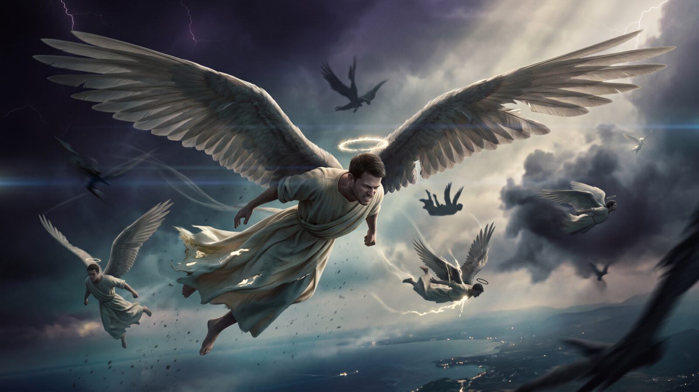
The catechism says it with the formality of a discipline that has already argued with every objection and kept the teaching anyway: every human person has a guardian angel, assigned from the moment of conception, whose work is the protection of the body and the intercession of the soul. The book does not embellish this. The book renders it. What the catechism names, the camera finds.
The Doctrine, Rendered
Three sources carry the teaching the book is working from, and the reader should know them by name because the iconography follows from the text. The ninety-first Psalm — Psalm 90 in the Vulgate numbering — is the locus classicus: He hath given his angels charge over thee, to keep thee in all thy ways. In their hands shall they bear thee up, lest thou dash thy foot against a stone. The Gospel of Matthew, in the eighteenth chapter, supplies the scriptural warrant for personal assignment: Take heed that you despise not one of these little ones: for I say to you, that their angels in heaven always see the face of my Father who is in heaven. Saint Jerome, commenting on that verse, was willing to make the inference explicit: the dignity of the human soul is so high that each one has an angel appointed to guard it from the moment of its birth.
The consequence for the book is simple and severe. A Guardian is not a general asset of Heaven, dispatched ad hoc to the region that needs one. A Guardian is a specific assignment to a specific person, carried for the whole of that person's life. The thousands of Powers in the order are a shared resource of Heaven's response to the outbreak; the billions of Guardians are not. Each one is already posted. Each one is already doing its work. The arrival does not deploy them. The arrival interrupts them.
Transit Mortality
Here the codex states the hard fact and does not look away from it. The air between Heaven and earth is contested the whole way down, and the Guardians pay the cost of the corridor more than any other choir in the order. They are the smallest, the least armored, and the last line of messenger-rank angelic in the Ninefold scheme. Where a Power has the plate and the consecrated arm and the rank to survive passage, a Guardian has a charge to reach. The two outcomes are not interchangeable.
The operational figure the book uses, stated once here and never sentimentalized again, is this: for every eighty Guardians dispatched through the contested corridor in the opening days of the arrival, seventy-nine do not complete the passage. The one that does arrives wounded. Not metaphorically. The Guardian that lands at the assigned body has been through the air between, and the air between has been waiting for it. Bleeding light. Torn plumage. A halo cracked along the rim. The armor of the ninth choir is not the armor of the second, and the Guardian is not equipped to defend the airspace it is being asked to cross. It was not built for war. It is crossing a war.
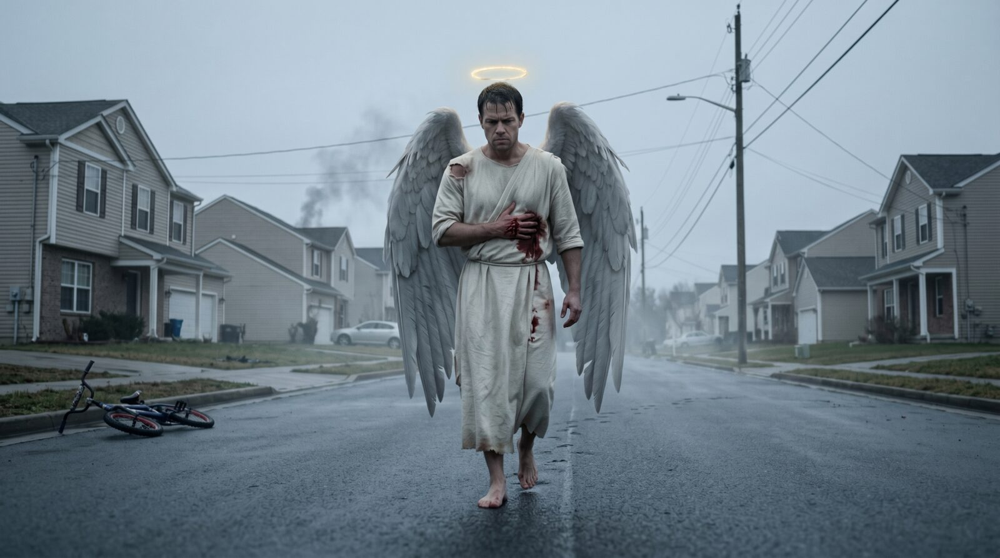
The number is not precise accounting. It is the shape of the cost. It is given so that the reader understands what it means, when a Guardian is rendered on screen, that this one has arrived. The nine-ninety of its peers did not. The book will show what the air does to them in Chapter V, when the iconography of the Enemy Below has been established. For this chapter, the reader is asked to hold the ratio and to let it govern the weight of every Guardian frame: each one is the survivor of an attempted massacre that was aimed at it personally, by name.
The Arrival Register
When a Guardian reaches its charge, the composition the camera finds is specific. The Guardian is already in the room. It did not break through a wall. It did not descend through the ceiling in a pillar of light. It is simply present, between the charge and whatever is coming for her, in the posture the tradition has always painted: wings partly forward, body turned toward the threat, face turned toward the soul it is guarding. The posture is not a charge. It is a stand. The Guardian will not run the threat down. The Guardian will hold this line until the threat has changed its mind, moved on, or killed her. The third possibility is not theoretical. The Guardian is at the assignment in case of the third possibility.
The book distinguishes this arrival register from the altarpiece variant deliberately and cleanly. A Power on the field looks almost exactly like the Power on the wall; the continuity is the whole argument of Chapter II. A Guardian on the field does not look like any altarpiece the audience has ever seen. Altarpieces of Guardians are the cemetery-stone register — sentimental, domestic, the angel leading the child across the bridge. The Guardian that has just completed a transit through contested air does not look like that plate. She looks like what a messenger looks like when the messenger has been hunted across a continent of sky by things that wanted to hurt her and caught up to her more than once. She is bleeding. She is holding. She has not yet put her wings down.
The iconographic instruction for the book is therefore this: when a Guardian is introduced to the audience, introduce her after the arrival, not before it. The audience should meet the Guardian at the moment the charge she is guarding becomes aware, or fails to become aware, that she is there. The audience should see what the passage has cost her before the audience is asked to love her. This is not grimness for its own sake. It is the iconographic consequence of taking Psalm 91:11 seriously. In their hands shall they bear thee up is the promise. What it costs the hand to reach you is the book.
Concealment, Not Combat
The Guardian's operational repertoire is not the Powers' repertoire. A Power cuts, burns, answers, ends. A Guardian shields, veils, diverts, carries. The distinction must be enforced with discipline, because the temptation — both for the audience and for the writer — will be to promote the Guardian to the combat tier every time her charge is in danger. The codex refuses the promotion. The Guardian can be killed by what she is shielding her charge from; she cannot become a Power in order to survive the encounter. If the combat has reached a register the Guardian cannot hold, the Guardian dies and the charge dies, or the Guardian dies and the charge is found by a Power. What the Guardian does not do is become a Power.
In positive terms, the Guardian works in four registers. She shields — interposes her body, her wings, her remaining intact armor between the charge and the thing moving. She veils — alters the local conditions of sight and sound so that the thing moving does not locate the charge in the first place, the teaching the tradition calls angelic cooperation with Providence and the book simply calls not being found. She diverts — places the thing moving in the path of its own next obstacle, the staircase, the traffic, the ambush laid for it by a Power three streets away. She carries — lifts the charge to the next safe register, sometimes physically, sometimes by the hand of a human who arrives at the moment the charge could not have been saved any other way and does not know why the compulsion to look for her struck just then.
The Guardian is also the tier that intercedes. The Powers execute. The Guardians pray. A Guardian's upward line is continuous: it carries the soul's case to the tier above, and the tier above to the tier above that, and so on up the choir-ladder until the case reaches the court it was headed for. The book treats this intercession with the same literalism it treats everything else. Prayers are not absorbed by the atmosphere. They are carried.
Variance at the Lowest Rank
One rule of the Ninefold Order inverts at the ninth choir, and the book keeps the inversion visible on the surface of the design. The Powers are uniform within rank. The Guardians are not. This is not an accident of craft. It is an iconographic fact. An order's uniformity rises as it approaches the throne. The Seraphim are indistinguishable. The Cherubim are indistinguishable. The Powers are nearly so. The ninth choir, assigned one-to-one to specific human souls, has as many variants as the set of persons it is assigned to. The Guardian posted to an illiterate elderly widow in a southern Italian hill town does not look like the Guardian posted to a Korean software engineer in Seoul. The assignment shapes the messenger, the way the instrument shapes the musician. Variance lives here because personhood lives here.
The book uses this freedom deliberately. Guardians in the codex carry every variance the Powers refuse: skin tone, hair color, build, implied age, register of expression, the particular dialect of holiness the assigned soul's tradition has honored. This is not diversity-casting applied to the angelic. It is the opposite. The Powers are uniform because the tradition painted them uniform. The Guardians are varied because the tradition painted them varied. In both cases the book is observing what the tradition has already decided, and in both cases the reader who mistakes classical observation for modern politics is misreading the same page in opposite directions.
The Answered Prayer
The Guardian is the tier whose stories the book can tell at the smallest scale, and this is the chapter's practical gift to the project. A Power's narrative unit is a battle, a judgment, a city. A Guardian's narrative unit is a prayer. One prayer, from one person, in one hour of need, and the specific manner of its answer by the specific being assigned to that person from the moment of conception. The short-form canvas the codex calls the answered-prayer short belongs to the Guardians by right, and the book will build the IP's short-form catalogue from this material before it returns to the larger registers of the Powers and the Fallen.
The form of an answered-prayer short is strict and easily stated. A human being, named, in a place, at a pressure that has reached the edge of what the person can carry alone. An interior turn toward prayer, which in the grammar of this book is not an editorializing close-up on piety but a simple fact about the direction the person's attention has just moved. A Guardian, who has been in the room the whole time, moving to the register the prayer has authorized her to move to. An outcome that does not spare the human being the cost of her own life but that carries her through it on terms she could not have found on her own. The outcome is never triumphalist. The outcome is often ambiguous by the standards of the uncovenanted world and unambiguous by the standards of the covenant. The form is what it has always been. The book just writes it down.
The answered-prayer short is also the book's answer to the question the arrival keeps raising in the reader's mind, which is: why Heaven appears to have withdrawn from the ordinary scale of human life in the era the codex opens on. Heaven has not withdrawn. The Guardians are at their posts. Their costs are not being reported by the networks that report what the Powers are doing in the sky, because the Guardians' work has always been the work nobody sees. The codex will make a portion of that work visible, one short at a time. The invisibility is the vocation. The book is a small and respectful violation of it.
ut custodiant te in omnibus viis tuis.
The Fallen
sed rudentibus inferni detractos in tartarum
tradidit cruciandos, in iudicium reservari.
What a Fallen is
A Fallen Power is not a demon. This is the first distinction the chapter must draw, because the iconography of Hell will press the two categories together and the book must hold them apart. A demon is a creature native to the region below the contested air, summoned or loosed into the human world under whatever compact or accident the era permits. A Fallen Power is a warrior-angel of the Second Sphere who has left her post. She was of the order. She is not of the order now. The rank remains; the function has been inverted.
The tradition names the principle clearly. Augustine and Aquinas both teach that the fall of an angel corrupts the being but does not erase the being. The rank a Fallen was ordained to is the rank she still carries, because an angelic nature does not admit demotion — only apostasy. A Power who falls does not become a lesser creature; she becomes the creature she was, aimed at what she once defended. This is the precise shape of the horror the Fallen carry in the IP. They are not the opposite of the walking Powers. They are mirrors of them.
The codex treats the Fallen, therefore, as the named antagonist tier of the book. Below them, the cult. Below the cult, the lesser demons the book will name in Chapter V. Above them, the princes of Hell, held in reserve for rare use. They are what a walking Power could become. The mirror is the register.
Naming — why not the Seven Deadly Sins
The naming convention for Fallen Powers in this codex is the inverted-virtue Latin pattern, and it is a canon rule of the book. Every named Fallen is named for the specific virtue she betrayed, in the Latin inversion of that virtue's proper name. Fallen Pietas is Sacrilega. Fallen Iustitia would be Iniquitas. Fallen Misericordia would be Crudelitas. Fallen Fides would be Perfidia. The name itself is the theological indictment: a reader cannot say it without also saying what the being desecrated.
The Seven Deadly Sins — Superbia, Invidia, Avaritia, Ira, Acedia, Gula, Luxuria — are explicitly off the table as Fallen-Power names in this IP. This IP is called Wrath, and naming a Fallen Power Ira would require the audience to hold, at every frame, the distinction between the sin the IP is named for and the being on screen. The book will not ask that work of the audience. The Seven Deadly Sins are a closed set of seven; the inverted-virtue framework is open. Any virtue not yet named for an antagonist can become the name of the antagonist the next story requires.
The Visual Break
When a Power falls, the uniformity of her rank breaks with her. The walking Powers are blonde, blue-eyed, armored identically within rank, halo at the vertical, wings white-gold. A Fallen Power retains the plate and the rank and the capacity, but the palette she carried into the order is replaced by the palette she carries out of it. Dark hair. Darker skin. Wings that were white are now black-feathered or leathern. A halo that was gold is now absent, or broken, or cold. Horns where a circlet would sit. The armor is the armor; the being inside it is no longer the being the order ordained.
The book reads this visual break as theology, not as costume design. The uniform the order painted itself in was the signature of the order's consent to be an order. A Fallen Power has withdrawn that consent, and her body bears the withdrawal as permanent fact. Milton's Satan wore the brightness he fell with, darkened by the falling. Dante's inner circles know. The codex simply continues the painting.
Introduction Format — the Cult-Altar Inversion
A walking Power is introduced through a Baroque altarpiece in a chapel niche of the refuge compound. A Fallen Power is introduced through the inverse of that format, structurally matched point by point. The chapel becomes a cult compound altar space. The altarpiece becomes a desecrated Christian painting: the cult has taken an actual Baroque work from a ruined church and painted the Fallen's face over the original figure, or sprayed her sigil across the composition. The placard becomes a crude plaque: wood, bone, or sheet-metal, scratched or branded rather than chiselled. The beeswax becomes red wax and oil lamps; the warmth becomes cold.
The inversion is load-bearing. The cult of the Fallen does not invent a visual language; it corrupts an existing one. That is the correct register for a cult that worships beings whose whole theology is the betrayal of an inheritance. The originals are still the originals. What has happened to them is what has happened to the being on the new altar.
Sacrilega is the first named Fallen Power of the IP. The corruption she carries is the corruption of Pietas — the classical virtue of reverence owed to what is sacred: God, parents, country, sacred objects, scripture, holy places, the faithful departed. Pietas is the virtue the Aeneid opens its hero on; it is the virtue the catechism names as a gift of the Holy Spirit; it is the virtue the Roman fathers inscribed on the household altar before they inscribed anything else. Sacrilega is that virtue turned inside out. Her function, as a being, is the desecration of the sacred. She does not oppose Heaven by making war on it. She opposes Heaven by bored contempt for the things Heaven has instructed the faithful to revere.
Her signature register, which the book will return to in every short she appears in, is casual sacrilege after atrocity. She enters a faithful household. She kills the inhabitants without urgency and without ritual. She then makes herself comfortable among the dead and the sacred objects — feet on the table, the Bible upside down, the family crucifix used as an ashtray, the rosary wound around a dog's collar, the holy water emptied into the sink. The violence is not the performance. The violence is the errand she ran to get to the thing she actually wanted to do, which is to be bored in the presence of what the faithful loved. The boredom is the blasphemy.
Rage-coded demons consume evil with appetite. Sacrilega is what a Fallen Power becomes when she no longer needs appetite to desecrate. Her cult, her sigil, and her placard follow from this register. The cult that venerates her does not venerate destruction; it venerates self-sovereignty, freedom from the obligations of the sacred, the permission to treat the holy as useful furniture. The cult reads Heaven as tyranny and reads Sacrilega as the being who first stopped serving. This is the antinomian line the Miltonic and Luciferian traditions have always drawn; the codex draws it where the tradition draws it, and draws no further.
The Sigillum Sulphuris
The sigil borne by Sacrilega and her cult is the alchemical symbol for sulphur — a cross surmounted by an infinity loop, in the hermetic tradition the sign that corresponds to the element of the damned and the fire of Hell. The canonical name of the symbol in the IP is the Sigillum Sulphuris, in Latin — "little seal of sulphur" — with the field-register English simply the sulphur sigil.
The codex uses the historical name deliberately. The symbol is older than any pop-cultural label the twentieth century pasted onto it. Hermetic tradition called it sulphur. Christian hermeticism, in particular, anchored sulphur to the brimstone of the lake of fire the Apocalypse names in its nineteenth and twentieth chapters — stagnum ignis et sulphuris, the pool of fire and sulphur. What the tradition called the thing is what the IP calls it.
In practice the sigil appears in three registers. Cultists wear it crudely — spray-paint on a hood, a brand on the forearm, chalk on a doorframe. Sacrilega wears it in blood-red paint on her breastplate, in the place a walking Power would wear her order's badge. Ruined chapels, in the outbreak era the book opens on, sometimes show it scorched into the stone of the altar.
The Cult-Voiced Placard
Where Heaven's placards describe what the Power is — Ivstitia · Justice / A Power of Heaven — the Fallen's placards describe what the cult believes she is. The placard is cult-voiced. This is a structural rule. The English reframe on line one is not a translation of the Latin above it; it is the word the cult would inscribe with pride. For Sacrilega, the Latin name is her correct inverted-virtue form; the English beneath it reads Defiance, not Sacrilege. The cult claims her violations as its virtue. Line two does not name her as fallen. It names her as sovereign.
The two-line form renders a theology the cult has written for itself. The horror of Sacrilega is not that the cult worships a monster. The horror is that the cult worships her in language the cult finds perfectly coherent, grounded in a tradition the cult can cite from memory, on stones the cult carved itself. She is not their monster. She is their saint.
The Open Framework
Sacrilega is the first named Fallen. She is not the last. The inverted-virtue framework that names her is open, and the codex lists the canonical candidates so that future shorts can draw from the table rather than reinvent it. A chaplain-betrayal story requires Perfidia — Fallen Fides. A rescue-gone-wrong requires Crudelitas — Fallen Misericordia. A judgment-corruption story requires Iniquitas — Fallen Iustitia. A hatred-registered-as-love story requires Odium — Fallen Caritas. The pairings are exact because the framework is exact. A Fallen Power's name is the virtue she once carried, in ruin.
Fifteen candidates are presently charted and reserved. The book does not list them here as a roster, because the roster is not a closed set. When a short requires a named antagonist, check which walking Power's virtue best mirrors the function the antagonist must perform, and use the Latin inversion of that virtue as the Fallen's name. The English reframe on the cult-voiced placard is then chosen for legibility to the audience the short is aimed at.
A word on restraint. The book will not name a second Fallen until a story requires the naming. This is a deliberate design discipline and it is consistent with how the walking Powers were introduced: four were named because four were needed to render the opening register of the arrival, and the remaining slots were held. One, for now, is enough to carry the tier; the next will arrive when the short that requires her arrives with her.
The Mirror-Match
The chapter closes on the principle that governs the tier. A Fallen Power is what a walking Power could become. This is not a narrative warning issued to the protagonists of the IP; it is a structural fact about the order the IP is set in. Angelic nature does not admit extinction; it admits only continued service or withdrawal from service. The warrior-angels the book has followed across Chapter II — Iustitia, Zelus, Vindicta, Misericordia — are, by their own ontology, the beings who could stop serving. That they have not is a covenant they renew, silently, at the register above the register the book can render.
The chapter's discipline, therefore, is to resist one temptation. The temptation is to stage a walking Power's fall. The book refuses it. A fall, in this tradition, is not a dramatic event; it is a decision beyond the reach of dramaturgy. What the book can stage is the mirror-match: walking Power against Fallen Power, the same armor, the same rank, the same classical lineage, arranged on opposite sides of the covenant. That is the climactic matchup the IP is built to deliver, and Chapter IV exists to prepare the audience to read it correctly when it arrives. The duel is not good against evil. The duel is the two possible endings of the same sentence, spoken at the same altar, by beings who once stood in the same rank.
In iudicium reservari.
The Enemy Below
quia multi sumus.
The Tier Below the Fallen
The previous chapter named the commander-tier antagonists of the IP. This chapter names what follows them into a contested block. The three-tier antagonist ecosystem the book uses is simple in its architecture and rigorous in its register. At the top, a Fallen Power — named, singular, rare. Beneath her, the cult that venerates her — human volunteers, hooded, self-marked, infantry-scale. Beneath the cult, the Daemonia — the Vulgate's word for the demons Christ cast out, in the IP's rendering a quadrupedal shock-troop tier that swarms, flanks, and overwhelms. The three tiers do not operate independently; they operate in concert.
The register that governs this chapter is the register of infantry and shock troops, not commanders. A walking Power fighting the cult is a judgment scene. A walking Power fighting Daemonia is crowd-clearing combat. A military unit fighting the cult is a grounded firefight at peer equipment. A military unit fighting Daemonia is the horror register in close quarters. The matchups are different kinds of scene, and the book names them separately here because a story will need to choose between them.
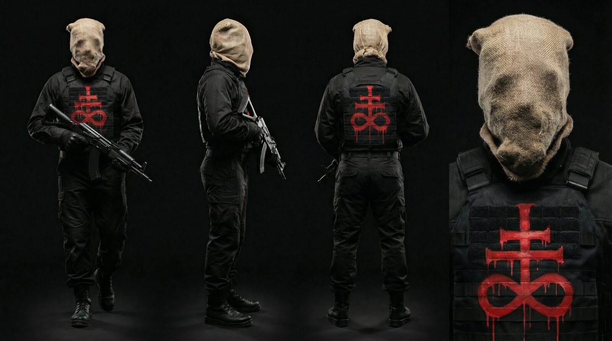
The Cult — Human Volunteers
The cult the book writes into is not a secret society. It is a post-collapse infantry formation whose membership has chosen to be what it is. Its members are not conscripted and not possessed. They are volunteers in the exact theological sense the tradition has always meant by the word: human beings who have, with the deliberate use of the faculty the tradition calls the will, committed themselves to the being venerated at the cult altar. The cult does not require enchantment to operate. It operates on human consent, which is the most durable fuel the fallen side of the field has access to.
The visual signature is unbroken by individuality. A burlap hood, roughly cut, fully obscures the face. Black tactical kit, scavenged from the collapse of state-actor supply chains — plate carrier, combat trousers, boots taken from a looted warehouse or stripped from a dead soldier. AK-pattern rifle because the AK-pattern rifle is what the ruined cities still have in circulation. The Sigillum Sulphuris is stenciled, spray-painted, or brushed on the plate carrier in crude blood-red. Nobody issued this symbol. They put it there themselves. That is the whole point.
The tonal register the book uses for the cult is death squad, willing sacrifice, cattle with guns. The three phrases do not contradict. The cult is a death squad in effect — a unit that travels through civilian territory and does the work of reducing it to cleared ground. It is a body of willing sacrifices in theology — each member has accepted that the venerated being will, at some register, consume her, and has volunteered the consumption as her offering. And it is cattle with guns in tactical composition — the individual cultist is not a trained operator. The body count the cult generates is not produced by skill. It is produced by numbers and by the absolute willingness to take casualties.
Who joins the cult is a question the IP will answer at the short-film scale. For the purposes of the codex, three categories are stated and no more. The first category is the grief-broken, persons whose faith has been deformed by loss into a theology that blames Heaven for the loss. The second is the intellectually vain, persons for whom the cult's servitude-to-sovereignty story scratches a specific philosophical itch. The third is the simply cruel, persons for whom the cult is a permission slip to do what they had wanted to do anyway.
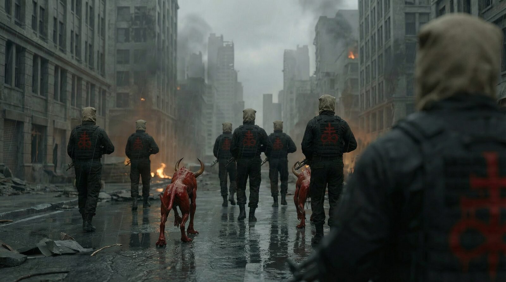
The cult's engagements with Heaven's forces settle into two registers the book will use as separate scene-types. Power versus cult is slaughter — the Power rendering judgment at speed, the cult's willingness to die accelerating the body count rather than slowing it. Military-or-chaplain-equipped detachment versus cult is peer-equivalent tactical combat, the kind of firefight the story can linger in because the outcome is in doubt. Guardian-shielded civilians passing through cult-held ground, invisible, is the third register.
The Daemonia
The class name is locked. Daemonia — singular Daemonium — the Vulgate Latin word the Gospels use for the demons Christ casts out. The canonical references are Matthew 8:16, where the Lord casts out the spirits with a word; Mark 5, where the Gerasene demoniac speaks in the plural; Luke 8:30, where the being possessed is asked for its name and answers Legion. The IP uses the scriptural Latin word for the scriptural kind of creature.
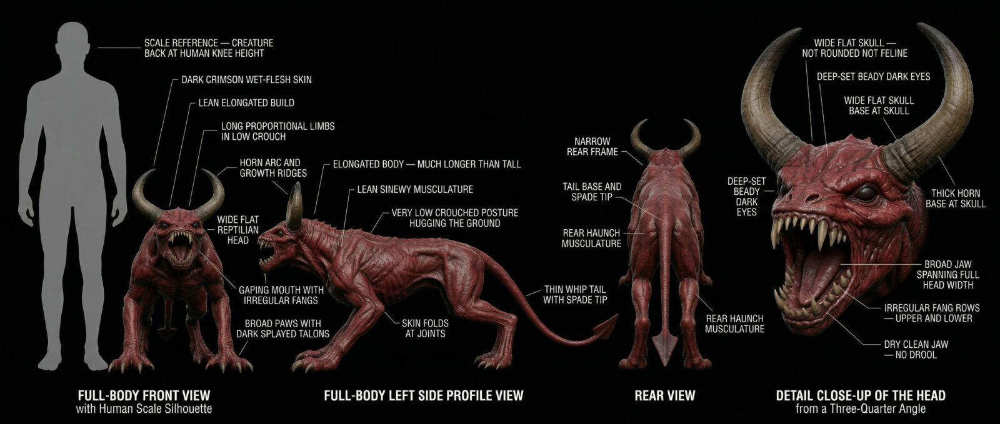
The physical register is the register of a pack-hunter, executed rigorously. Knee-height to a human at the shoulder, so that the first danger in a room is the one at the reader's waist, not the reader's eyeline. Elongated, lean, built for the covering of distance at speed. Dark crimson wet-flesh skin that reads, at working distance, as a body turned inside out and walking. Wide flat reptilian heads set low on the body, with wide-set curved horns that preserve the theological register — this is a demon, not a beast. Gaping mouths with irregular fang rows, the irregularity deliberate: the mouth does not close correctly.
The behavioral register follows from the physical one. Daemonia do not engage singly unless isolated by combat. They travel in packs. They flank. They harass a line until the line breaks and then feed into the break. They coordinate without speech at the register the book permits a predator to coordinate — not by intelligence, by instinct tuned across many bodies at once. They are not boss monsters. They are shock troops. A walking Power tears through them as crowd-clearing combat. A military unit fears them as a swarm threat in close quarters. A civilian meets one only in the last frame before the cut.
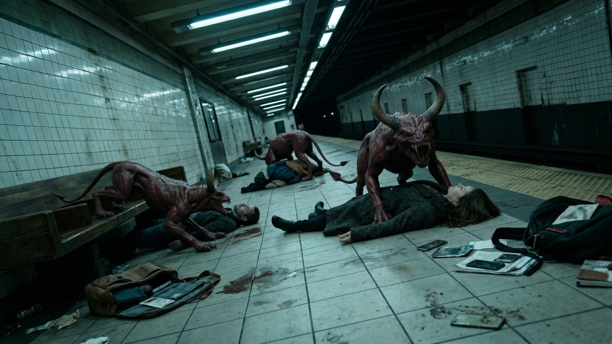
Daemonia individually are not a match for a Power. Daemonia in sufficient number, at the right angle, in the right terrain, are the manner in which Heaven's forces take casualties the tier above could not have taken by the Fallen alone. The mathematics of the outbreak runs through this tier. The Fallen is the one whose face the story remembers. The Daemonia are what kills more Powers than any other class of creature in the book.
Combined Operations
The cult and the Daemonia operate together on the same front because the Fallen command both. The chain is short and the codex states it once. A Fallen Power gives the intent — a district to be reduced, a chapel to be desecrated, a specific walking Power to be ambushed in transit. The cult is the formation that carries the intent at infantry scale; the Daemonia are the shock element that moves at ground level alongside the formation, occupying the volume below the cult's rifles. The two tiers do not speak to each other in any sense the audience can hear. They are both under the same command.
The tactical consequence the book will honor is that a single-tier engagement is rarely the whole picture. If the audience sees cultists, Daemonia are in the terrain the cultists are advancing into. If the audience sees Daemonia prowling a subway, cultists are in the street above. A short that wishes to render the enemy cleanly at a single tier must have a reason to have excluded the other. This is not a rule against single-tier scenes; it is an instruction that single-tier scenes are the exception.
What They Are Not
A final distinction the chapter owes the reader. The cult is not the possessed. Possession in the scriptural sense — the seizure of a human being's body by a Daemonium, as in the Gerasene case the epigraph cites — is a different phenomenon, preserved for future material. A cultist has chosen. A possessed person has been taken. The two categories are not collapsed in the codex because the tradition does not collapse them.
The cult is also not the princes of Hell. Lucifer, Beelzebub, Asmodeus, Leviathan, Mammon, Belphegor — the traditional hierarchy the older demonologies cataloged with care — sit above the Fallen tier at a register the codex will hold in reserve. The IP does not bring a prince on screen lightly.
The Daemonia are not the Fallen. A Daemonium is a creature; a Fallen is a being with a rank. The difference in register, in scale, in command, in the kind of horror each carries, is the difference between an animal and an apostate officer. A walking Power cuts through Daemonia; a walking Power duels a Fallen.
quia multi sumus.
Language & Liturgy
et Verbum erat apud Deum,
et Deus erat Verbum.
Why Latin
The book speaks Latin at load-bearing moments. This is not a stylistic choice the book has made against the grain of its setting; it is the continuation of an established register that predates the setting by almost two millennia. The Church the tradition in this universe descends from prayed, taught, governed, and buried its dead in Latin from the patristic era through the Second Vatican Council, and the Vulgate — Saint Jerome's translation of the scriptures from Hebrew and Greek into the Latin of the Roman world — has been the Western Church's scriptural text for longer than most modern languages have existed. When the book reaches for a line at weight, it reaches for the Latin the tradition reached for first.
The second reason is that Latin does work ordinary prose cannot. It names without translating the force of the naming. The Powers' virtue-names, the Fallen's inverted names, the seals at the close of every chapter in this volume, the cult's sigil, the scriptural class-name of the Daemonia — each is Latin because the Latin is what the tradition has been speaking to the things the book is writing about. The English glosses the book provides in brackets or asides are courtesies, not replacements.
The book does not require the reader to read Latin. It requires the reader to trust that the Latin is not ornament. A reader who hears Dona requiem spoken over a wounded man on a subway platform and does not know what the words mean still knows, from the register at which they have been delivered, that the line is sacramental.
The Naming of the Powers
Each Power is named for a virtue, in Latin, in the feminine gender. The feminine is not decorative; virtus in Latin is grammatically feminine, and the personifications the Western tradition has painted of the virtues for seven centuries are feminine by this grammar. The book inherits the grammar intact. Iustitia, Vindicta, Misericordia, Zelus, Pietas: these are not names the book invented and set into a Latin frame. They are the names under which the tradition has painted these figures in altar panels, cathedral frescoes, and devotional plates since the early Renaissance.
The virtue each Power bears is her vocation, not a label applied to her. Iustitia is Justice because her work is judgment. Vindicta is the active arm of Romans 12:19, mihi vindicta, ego retribuam, reserved to the Lord and at this moment in history delegated to her. Misericordia is Mercy in the register the Misericordia fraternities have always understood mercy in: not sentiment, but the corporal work of burial, rescue, and the administered good death. Zelus is the Phinehas-register zeal of Numbers 25, the jealousy that acts. Pietas is the classical Roman virtue the tradition folded into Christian piety, the duty owed to what rightly commands devotion.
On the Latin Names
Medieval Latin names this choir twice, and the book inherits both names. The Dionysian register — the sixth-century Pseudo-Dionysius, carried forward by Aquinas and the Scholastics — calls them Virtutes, the Virtues, the warrior order of the Second Sphere. The Pauline register — the Vulgate at Ephesians 6:12 and Colossians 1:16 — calls them Potestates, the Powers. Both terms name the same choir. The English word Power descends, through Old French, from the second.
The codex uses each where it lives most naturally. Virtutes appears where the book speaks of the order of Heaven as the tradition's classificatory scheme has preserved it. Potestates appears where the book speaks of the war in the air as the Vulgate names it. Power, in plain English, is the working term in narration and on the placards.
On the Air
The Pauline register, once named, names the enemy too. The Vulgate at Ephesians 2:2 calls the Adversary's house potestas aeris — the power of the air. The cosmological plate of the Prologue renders this as vertical geography: Caelum above, Terra below, and between them Caelum Inferius, glossed Potestas Aeris, the lower heaven, the airy span in which the war is fought. That the same Latin word — potestas — names both the Powers of Heaven and the power of the air is not a lexical accident. It is the doctrine in miniature. The Fallen kept what they were. A Power of Heaven and a power of the air share a word because they share a nature, and the word is the evidence of the shared nature.
The Naming of the Fallen
The Fallen are named by the inversion of the virtue they once bore. Sacrilega, the first of the sovereign Fallen named in this volume, is Pietas reversed: sacrilega is the Latin feminine adjective for one who violates the sacred, the exact privative of the piety she forsook. The grammar of her name is the grammar of her apostasy. A reader who has been told her virtue-origin does not need her sin explained in prose; her name already carries it.
The convention the book will follow, as additional Fallen are named, is this. The Latin source-virtue is identified. The privative form of the virtue — non-, im-, in-, sacri-, -itas in its pejorative sense — is applied to produce a feminine Latin noun or adjective of the correct grammar. Where a cleanly privative form does not exist in classical Latin, a post-classical or Vulgate form that carries the same semantic force is preferred to an invented coinage. The book would rather adopt a form the tradition has already spoken than invent one the tradition does not recognize.
The Daemonia
Plain-English demons is available in dialogue and running narration where the Latin would be awkward in the ear. The class name, when stated as a class, is Daemonia. Character dialogue may use the vernacular; the book's own voice, when naming the tier, uses the Vulgate Latin. A chaplain in a corridor firefight shouts about demons. The caption under the anatomy reference sheet says Daemonia.
The Spoken Lines
The book carries a small inventory of Latin lines that recur as register-setting utterances. Each line is drawn from scripture, from the liturgy, or from a recognized devotional source, and each carries its citation because the citation is what keeps the line from becoming a rehearsed catchphrase.
Vengeance is mine. The pistol in Vindicta's hand carries the words etched down the slide because her ministry is the delegation of that prerogative. The line is not an assertion of her right. It is a citation of the One from whom the right is held.
Grant rest. The line from the Requiem Mass the Western Church has sung over its dead for more than a thousand years. Misericordia speaks it over a body she cannot extract. The verb is grant, not avenge.
God wills it. The book restores it to its devotional root: a statement that the action taken is taken under a judgment other than the actor's own.
It shall consume them. The fire sent forth by the Lord, consuming the enemy as stubble. The shotgun bears it because the shotgun is a fire-register weapon in the Phinehas-zeal vocabulary Zelus operates within.
I will not serve. The book reserves the line for the Fallen register. A Power does not speak it. A Fallen Power has spoken it, once, at the moment that made her a Fallen Power.
Legion is my name, for we are many. The Daemonia do not speak this line as individuals; the line names their class.
He has given his angels charge over you. The Guardian-register verse, cited by the Lord himself against the tempter in Matthew 4 and Luke 4, carried by the tradition into every bedtime prayer addressed to the ninth choir.
The Seal Pattern
The book closes every chapter with a two-line Latin seal. A seal is two lines, centered, italicized, at reduced weight from the body. It is drawn from scripture or liturgy. It is given with citation on first appearance and without on later return. It is not translated in its seal position. The reader is trusted to have already met the line, or to look it up, or to hold it in sound until the book delivers the translation elsewhere in the text.
The purpose of the seal is ritual, not decorative. It marks the close of a chapter the way the liturgy marks the close of a reading — with a consecrated phrase, spoken in the tradition's language, at a register the preceding prose is not permitted to occupy. One line would be an inscription. Two lines are an invocation.
The Cult Register
The cult does not speak Latin at any operational register. The cult speaks the local vernacular — in the primary setting, post-collapse American English, coarsened by the theology the cult has taken on. The Latin in the cult's sphere is the sigil alone, and the sigil is mute. The book will not give the cult Latin, because Latin in this book is the language of fidelity, and fidelity is what the cult is characterized by its absence of.
This rule produces an asymmetry the reader will feel without being told about it. Heaven's forces speak Latin when they mean what they say. The cult does not. A cultist screaming in English at a walking Power who has just entered a room is already losing the linguistic register of the scene before the firing begins.
A Note on What Is Not Translated
The book withholds translation of certain lines in their operational position even when the same lines are glossed elsewhere in the volume. The seal of a chapter is given without translation because the translation is a prose act and the seal has passed out of prose. The weapon-etchings are given without inline gloss because the weapon carries the line at a register the story is asked to trust the reader with. The prayers spoken in Latin by the Powers over the dead and the wounded are, at the instant of the short, not given subtitles.
The book's position is that a phrase fully translated in the instant of its utterance has been explained rather than spoken. Explanation is the prose mode. The book is willing to explain — this chapter is almost nothing but explanation — at the codex level. At the story level, the book declines. The Latin is left to carry what the Latin carries.
Et Verbum caro factum est.
The Hour at Street Level
et opiniones proeliorum.
… sed nondum est finis.
The Register the Book Walks Against
The six chapters preceding this one have addressed the book's subject. Heaven's order has been named. The Powers who are the book's protagonists have been figured in the altarpiece register and the operational register. The Guardians who carry the answered prayer have been treated in their own chapter. The Fallen and the human cult and the Daemonia have been catalogued. The working language of the volume has been set. What remains is the register the book walks against.
Wrath's horror runs on a collision the codex has implied in every chapter without naming head-on. The sacred register carries weight only if the civilian register also carries weight. A walking Power in a field of painted allegory is decoration; a walking Power on a subway platform, in a ruined chapel, past an abandoned convenience store whose television is still broadcasting a civil emergency message — that is the scene the book is making, and it is the collision that does the work.
The scope of the chapter is deliberately smaller than the subject chapters. The world is not a tier of the hierarchy. The world is the surface the hierarchy operates against.
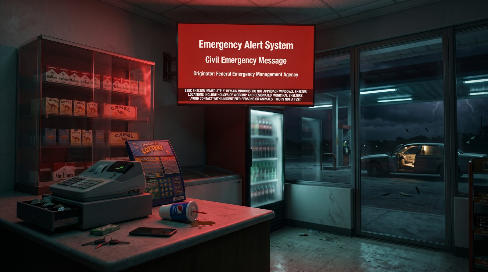
The Emergency Alert System is the United States government's civilian broadcast channel for declared hazards, and in the hour of the outbreak it becomes the instrument through which the state attempts to govern the civilian surface of a crisis it cannot officially classify. The classification chain is paralyzed between what is true and what is defensible to say. Demons is not a noun the federal register prints. Supernatural incursion is not a category in the FEMA emergency-taxonomy playbook. The state falls back on the most generic wrapper available — the Civil Emergency Message — because it is the only category whose language is vague enough to accommodate what is actually happening.
The drafting constraints that produce the text on the screen are layered and, in places, contradictory. Church-state separation forbids the state from directing citizens toward religious institutions; the drafters solve this by listing houses of worship as shelter infrastructure rather than directing civilians to them. Credibility with a divided audience forbids theological prescription; the language is engineered to carry both readings simultaneously, devotional and infrastructural. Information hygiene forbids naming a hazard the state has not classified. And compliance friction forbids the register from reading strange. Panic in the drafter's hand produces dismissal in the viewer's head. Flat official language produces compliance. The register is flat because the register must be flat.
The single phrase that carries the chapter's argument is the one the plate's screen shows most plainly: avoid contact with unidentified persons or animals. This is the point at which the civic register and the book's subject touch. The persons are the cult catalogued in Chapter V — hooded volunteers with AK-pattern rifles and the Sigillum Sulphuris stenciled on their plate carriers, whom the state is not permitted to name as such. The animals are the Daemonia — the Vulgate-Latin scriptural class catalogued in the same chapter, which the state is even less permitted to name. The adjective unidentified does the whole load. The state has produced, under simultaneous constraint, the one phrase its legal architecture will let it produce.
The Close Reader's Tells
A reader who pays attention to the full bulletin finds a small inventory of tells — places where the drafting chain's knowledge leaks around the constraints that were designed to contain it. The codex names three.
The first is the phrase houses of worship, cathedrals and other religious institutions in the shelter guidance. In normal emergency-management practice cathedrals are not listed separately from churches; a cathedral is a church, administratively speaking. Someone in the chain knew that consecrated ground with longer continuous sacramental history carries weight the hazard specifically presses on, and could not say so, and so listed cathedrals separately in a place where a legal reviewer would read the distinction as redundant rather than theological.
The second is the rooftop advisory. The bulletin warns civilians away from rooftops, and no conventional civilian-shelter hazard warns civilians off rooftops specifically. Chemical clouds drift low; radiation distributes broadly; ballistic threats work at unpredictable altitudes. The inclusion of the advisory is the state telling the reader, without telling the reader, that the hazard has an aerial register. To a reader who has seen anything, the advisory reads literally. To a reader who has not, it registers as one more item in a long list.
The third is the phrase unusual sounds, lights, or phenomena. This is phenomenological language of a kind that does not appear in any standard Emergency Alert template. The phrase is broad enough to cover anything the tradition has ever described as a sign or a portent. The state's drafters do not have the category. The drafters have reached, instead, for the broadest phenomenological vocabulary the template will admit. The broadness is the tell. The bureaucratic prose does not hide what the bureaucratic prose cannot say. It reveals it, to a reader who is reading with the tradition in mind.
The Degradation of the Message
The broadcast on the plate's screen is the early-collapse version of the message. The drafting chain is intact. The legal reviews have been conducted. The language is the best compromise the state can produce in the hour the message was drafted. It took approximately four hours to clear — fast by federal standards, catastrophically slow by the hour's — and by the time it went to broadcast, many thousands of civilians had already died because no authority had told them anything.
What happens to the message as the collapse proceeds is itself a narrative element. The constitutional delicacy around houses of worship drops first; cathedrals are named as such, without the civil-defense cover. The information hygiene fails next; symptoms begin to be described that can only be what the state had refused to say. The review chain collapses; there is no one to route the drafts through, and later revisions are approved by whoever is in the room at the time. The register strips. Late in the collapse, if the broadcast is still running at all, the message is plausibly a single sentence on a red screen, written by whoever is still at the desk, saying what the state should have said at the start.
The register of the state's communication is itself a chronological indicator. A reader or viewer encountering EAS text in a short can tell, from the text alone, how far into the hour the scene is set. The language is a timestamp.
The plate above is placed at the close of the chapter because it states, in a single composition, what the civilian register of the book is doing. The mural of Michael is older than the hour. The bodies at its foot are newer. The wall carries both, and the viewer is asked to read the wall as a single artifact — the civic surface of the world, inherited from the centuries in which the sacred register was publicly maintained, pressed on by the hour in which the civil register has failed to name what the inheritance always knew.
This is the register the Powers walk through. It is not a set the book has dressed. It is the United States of America in the particular hour the book is set in — a country whose civic surface is everywhere marked by a sacred inheritance it has spent a century uneasy about, and whose Emergency Alert System, on the day the inheritance is finally pressing back on the surface, can only gesture at what its founding constitutional settlement forbids it to say. The book does not have to manufacture sacred weight. The world still carries it on its walls, in its masonry, in its broadcast language, however buried by the register of the state that is failing around it. The Powers walk through that world. The book's work is to let the reader see what the Powers see when they walk through it.
The six preceding chapters have done the work of naming the sacred side of the collision. This chapter has done the work of naming the civilian side. What the book argues, across both sides, is that the two are one scene. The altar is in the ruined chapel. The chapel is on the same block as the gas station. The gas station is broadcasting a message whose shelter guidance points at the chapel without permitting itself to explain why. The scene is whole. The register shifts within it; the reality does not.
et opiniones proeliorum.
On the Registers This Book Is Written In
This book was written by an author who does not share the faith of the tradition it inherits. The author is an atheist. The tradition is Catholic. The decision to write a grimdark universe grounded in that particular tradition was made deliberately, and the note the reader is now holding is the explanation the book owes its reader for the decision.
Why Catholic, and Why by an Unbeliever
The choice of tradition was not arbitrary, and the author's distance from the faith was not compensatory. The Catholic tradition is the Western tradition whose visual, liturgical, and theological apparatus has been longest continuous in unbroken use — substantially the same Vulgate that Jerome set down at the turn of the fifth century; substantially the same angelological structure that Pseudo-Dionysius catalogued in the sixth; substantially the same Ave and Pater that a child in 2026 and a child in 1126 would recognize as the same words. A book whose premise is that what the old tradition said about the shape of the air has turned out to be materially accurate needs a tradition whose saying has been continuous enough to quote.
Other traditions carry their own inheritances, and the book does not claim the Catholic register is the only register a Wrath-shaped story could have been written in. The book is not the only book. It is the one the author was equipped to write, and the equipment the author had was what fifteen centuries of classical altarpiece, devotional Latin, and Scholastic angelology had deposited in the Western cultural record. To write in that register as an unbeliever is to write as a custodian of an inheritance one did not personally receive — which is a posture the book accepts, and which the book is arguing is a legitimate posture for the material.
A Refusal of the Asymmetry of Contempt
The contemporary register in which Catholic iconography tends to appear in genre fiction is, with consistency, one of three: as camp, as cheap horror dressing, or as mockery. The book refuses all three. It is not camp, and the reader will find no winking; the book's voice throughout is sincere, because the material is the material it inherited and the material is serious at its root. It is not horror dressing; the crucifix over the dead is not a prop, the Vulgate Latin on the weapon is not a paint-job, the altar in the refuge compound is not set dressing. And it is not mockery; the book will not find its grimdark energy by cheapening what the tradition has taken seriously for two thousand years.
The asymmetry the book refuses is this: it has become ordinary for Western genre fiction to borrow the visual and liturgical grammar of a tradition it does not take seriously, and to do so at the tradition's expense. The cross as costume. The Latin as gothic seasoning. The altar as dressing for whatever the story actually wants to do. This book's position is that if a story wants the weight of that grammar, the story owes that grammar the weight back. The altarpieces in the book are not borrowed; they are inhabited. The Latin is not seasoning; it is the language of the beings who speak it.
A Refusal of the Expected
The book's design choices at the creative level are, with consistency, the harder-path choice. The Powers are uniformly blonde, blue-eyed, haloed, winged, and female — not because the author believes such an iconographic inheritance is the only one that could have been drawn, but because the tradition's painters drew it this way for seven centuries and the book is the tradition's heir, not its auditor. The uniformity is the rank. Variety in the universe lives at other tiers; at the Powers' tier, sameness is how the order signals itself as an order. A book that had diversified the Powers to suit the present publishing register would have cost the book the argument at the rank the book most needed to make it. The book declined.
The Fallen are named by the inversion of the virtue they once bore, not by the Seven Deadly Sins. The sins-framework is the frictionless choice. The inverted-virtue framework is harder. It scales with the inventory of virtues, which is larger and more textured than the inventory of sins. The book took the harder path because the harder path produced what the book wanted — an open system, anchored in the tradition the Powers themselves descend from.
The Latin is carried in full weight. It is not subtitled in the composition the book envisions. It is not apologetic, and it is not ornamental. The reader is trusted to look up what the reader does not know, or to hear what the reader cannot translate, at the register the line is delivered in.
What Will Not Be Shown
The book does not depict Christ, the Trinity, the named Archangels, or the canonized saints. This is not an oversight, and it is not squeamishness. It is the tradition's own rule. The holy is shown by what it does, not by its face. The Powers operate under authority that does not appear on camera. The cultists are refused, in any given scene, by a mural whose saint does not descend in person to enforce the refusal. The Guardian who gets through speaks in the register of Gabriel without being Gabriel. The firearm is etched Deus Vult without God making an appearance as a character to authorize the etching.
The saints and the Archangels are present by invocation, by command, by scripture, and by effect. The reader is asked to read the absence the way one reads the absence in an altarpiece: not as missing figures, but as the figures whose non-appearance is the doctrine. The tradition painted Christ enthroned in mandorla, and did not paint the face of the Father. The tradition painted Michael in armor over the dragon, and did not paint the Father sending him. The book continues the rule.
What the Book Inherits, and What It Invents
The book inherits a great deal and invents less than its register suggests. The ninefold order is inherited. The Powers as a warrior choir is inherited. The virtue-naming grammar is inherited. The Vulgate is inherited. The iconography of wings, haloes, armor, and the altarpiece format is inherited. The notion that demons are cast out and called by a specific class-name is inherited. The notion that prayer is a traffic problem and that answered prayer travels through contested air is inherited; Daniel 10 is the book's charter scripture on that point, and the book has not added a word to what Daniel already said.
What the book invents is a restoration rather than an invention. It restores the classical tradition's register to a contemporary setting, arms the beings the tradition painted with what the era of the setting arms those beings with, and asks the reader to recognize that the continuity is the argument. The Sigillum Sulphuris is the book's own sigil, assembled from older weighted elements. The inversion rule for naming the Fallen is the book's own systematization of a convention the tradition had always used one-off. The transit-mortality mechanic for the Guardians is the book's own articulation of what the Catechism's assurance and the pastoral ground truth have long sat in tension over. Where the book invents, it invents the grammar that lets the inheritance keep running in a world the tradition did not outlive. Where the book refuses to invent, it refuses because the tradition has already said the thing the book would have otherwise had to say.
One Last Word
The reader of faith who holds this book is asked to receive it as what it is: a serious work built with a serious respect for a material the author does not personally believe. The reader who shares no faith with the tradition is asked to receive it as what it is: a serious work that trusts the tradition it inherits enough to write in its register without irony. Both responses are the responses the book is asking for. Neither is the response the book is apologizing for.
The book's voice throughout is not the author's personal voice. It is the voice of a custodian, writing as the tradition would have written from within. That the custodian is an unbeliever is not the book's secret. It is the book's condition of composition — the particular distance from which the material had to be approached for the material to arrive on the page without being either preached or mocked. The book is what was possible from that distance. The reader is asked only to read it at the distance it was written at.
sed nomini tuo da gloriam.
A Record of What the Images Descend From
The book uses the principal plates catalogued below across its eight content sections. Each plate is either a composition the tradition has painted before — restored to contemporary register in the book's visual grammar — or a composition the book introduces where the tradition's record left a gap the book had to fill. Where a specific scriptural source is cited, the citation is given because the scripture is the plate's charter. Where no specific antecedent is given, the plate is the book's own composition, sitting inside a tradition that named its grammar long before the book began borrowing it.
Prologue
- Plate I — The Mural and What Lies Beneath It.
- Saint Michael in the parish-wall genre; the devotional tradition of the church-facade mural preserved in North American Catholic parishes from the nineteenth century forward. Source: Revelation 12:7.
- Plate II — De Ordine Caelorum.
- Thirteenth-century French Gothic cosmological schema, descended from the Beatus manuscript tradition, the Hortus Deliciarum, the Liber Floridus, and the three-register predella format of Trecento altarpieces. Marginal citations: Genesis 1; Apocalypse 12; Ephesians 2:2 (potestas aeris); Ephesians 6:12 (adversus potestates); Daniel 10:13.
- Plate III — Ophanim Above a Contested District.
- Source: Ezekiel 1:15–21 (wheels within wheels, rims full of eyes). Composition original.
- Plate IV — Sacrilega at Rest.
- Composition original. The inverted Bible at the kitchen table is the book's own visual articulation of the sacrilega register.
- Plate V — Guardians in Transit.
- Catholic Guardian-angel tradition; Psalm 91:11; the bedtime-prayer genre. The mass-arrival / sparse-survival framing is the book's articulation of what the Catechism's teaching and the pastoral ground truth have long sat in tension over.
- Plate VI — One of the Seventy-Nine.
- Composition original, for the transit-mortality thesis of Chapter III.
- Plate VII — The Four (Ensemble).
- In the sacra conversazione tradition of the four-figure altarpiece frieze (Fra Angelico workshop, the Sassetta altarpieces).
Chapter I — The Ninefold Order
- Plate VIII — A Cultist at a Puddle.
- Source: Ezekiel 1. The Thrones appear in modes that refuse domestication — reflective surfaces, wheels-within-wheels. The reflection is the choir.
- Plate IX — A Dominion Over a Contested City.
- Baroque altarpiece vocabulary: crowned, winged, silhouetted. Lineage: Guercino, the Carracci workshop.
- Plate X — Iustitia in the Main Nave of the Refuge Compound.
- Sacra conversazione altarpiece composition. Lineage: Italian and Flemish devotional panel tradition.
- Plate XI — Seraphim Descending into the Presence of a Power.
- Baroque altarpiece vocabulary (Correggio, Tiepolo). Source: Isaiah 6.
Chapter II — The Powers
- Plate XII — The Canonical Altarpiece Niche.
- Chapel-niche-with-placard format, inherited from Italian and Flemish devotional panels; beeswax candle vigil per continuous parish practice.
- Plate XIII — Iustitia (Altarpiece).
- Oil-on-panel in Reni lineage — seventeenth-century personifications of Justice. The sword and the dove above are inherited iconography.
- Plate XIV — Iustitia (Operational).
- M60 engraved DEUS VULT (Council of Clermont, 1095) in blackletter.
- Plate XV — Zelus (Altarpiece).
- Oil-on-panel in late Baroque lineage; fire rendered as correctly-ordered light. Sources: Numbers 25; Exodus 15:7.
- Plate XVI — Zelus (Operational).
- Shotgun engraved CONSUMET EOS (Exodus 15:7, Vulgate).
- Plate XVII — Vindicta (Altarpiece).
- Oil-on-panel in Gentileschi lineage. Source: Romans 12:19.
- Plate XVIII — Vindicta (Operational).
- Sidearm engraved MIHI VINDICTA (Romans 12:19, Vulgate) in blackletter.
- Plate XIX — Misericordia (Altarpiece).
- Oil-on-panel in Caravaggesque lineage. Source: the Misericordia fraternity tradition of Florence — the Seven Corporal Works of Mercy as the iconographic program.
- Plate XX — Misericordia (Operational).
- Sidearm engraved DONA REQUIEM; source is the Requiem Mass propers — requiem aeternam dona eis, Domine.
Chapter III — The Guardians
- Plate XXI — Guardians in Peril.
- The interposition posture is the tradition's angelology of protection, restored — the Guardian between the charge and what is moving toward the charge.
- Plate XXII — Descent.
- The broken-wing arrival and bleeding halo are the book's articulation of the transit-mortality mechanic.
Chapter IV — The Fallen
- Plate XXIII — Sacrilega in Her Signature Register.
- Composition original. The casual desecration and the upside-down Bible are the book's visual articulation of the sacrilega inversion.
- Plate XXIV — Sacrilega in the Operational Register.
- The second body at the lower frame edge is where the chapter's thesis — a Power can be killed — is made material.
Chapter V — The Enemy Below
- Plate XXV — The Cult (Four-Panel Turnaround).
- The Sigillum Sulphuris is the book's own sigil, assembled from older weighted elements: the cross surmounted by an infinity loop (traditional demonological catalogues), and the alchemical sigil for sulphur (hermetic symbolism; fallen and infernal register).
- Plate XXVI — Cult Squad Advancing with Daemonia.
- Rear POV; the cult is always photographed from behind or from the side, because the cult does not have a face to show.
- Plate XXVII — Daemonia Anatomy Reference.
- Class name is scriptural: Matthew 8:16, Mark 5, Luke 8:30. The pack-hunter anatomy is the book's articulation of what the tradition has always described as shock-troop-register demons.
- Plate XXVIII — Daemonia Prowling a Subway Tunnel.
- Shotgun POV; the lead pack-member inside the beam, the rest in the dark beyond it.
Chapter VI — Language and Liturgy
Chapter VI carries no plates. This is deliberate. The chapter is the book's account of its own working language, and an account of language should not be illustrated; the language is its own illustration. The chapter's images are the Latin lines themselves — Mihi Vindicta, Dona Requiem, Deus Vult, Consumet Eos, Non Serviam, Legio mihi nomen est, Angelis suis mandavit de te — and the Latin lines are the plates that chapter displays.
Chapter VII — The Hour at Street Level
- Plate XXIX — EAS Broadcast at an Abandoned Gas Station.
- The broadcast text is the book's own drafting; the red-screen Emergency Alert format is the Federal Communications Commission's standing template.
- Plate XXX — The Chapel Mural of Saint Michael Over the Mass-Casualty Scene.
- Source: Revelation 12:7. Reprised from the Prologue as the book's bracketing image — the wall holds the mural and the bodies in the same frame, and the volume closes on the figure the volume opened on.
A Note on Attribution
The book names its classical antecedents by lineage rather than by specific canvas. This is the posture the tradition's own painters took toward their antecedents — a Reni was working in the lineage of Raphael, who was working in the lineage of Perugino, who was working in the lineage of Piero. The book's plates sit inside that same kind of inheritance.
The book owes a great deal to the Trecento predella painters, to the sacra conversazione altarpieces of Quattrocento Florence, to the Baroque personifications of the virtues, to the Roman devotional print tradition, to the Gothic cosmological manuscripts, and to the continuous parish-wall mural tradition of the last two centuries. The debts are the book's, not the plates'. The plates are the book's attempt to pay a fraction of those debts back in the register the debts were incurred in.
Quod factum est, ipsum est quod faciendum est.
Colophon
This volume, The Wrath Codex, has been set in Cormorant Garamond for its body, in Cinzel for its display and initial capitals, and in UnifrakturMaguntia for its Gothic textura blackletter inscriptions. It comprises a prologue, seven chapters, an author's note, and an appendix recording the lineage of its plates.
The text is the work of its author. The plates are the work of the same. Both are offered to the reader in the same register and at the same distance: as a serious work of custodianship, built with respect for a material the tradition took seriously for two thousand years.
Finis.